ウィンドウマネージャは外殻の HMI функціонал / підсистемаの中心的なфункціонал / підсистемаであり, 画面表示上の操作環境の基本となる空間であるパネルプレーン上に存在する複数のオーバラップしうるパネルの生成 / 削除 / 表示 / 操作等に関する基本的なфункціонал / підсистемаを提供している.
ウィンドウマネージャでは, 基本的にパネルプレーン上のフローティングパネル ( ウインドウ ) の管理のみを行ない, ダイアローグタイプのパネルやシステムパネルは独立したМенеджер панелей (Panel Manager)により管理されることになる.
ウィンドウには必ず対応するприкладний додаток / програмаПроцес (Process)が存在し, そのприкладний додаток / програмаПроцес (Process)がウィンドウマネージャで提供しているфункціонал / підсистемаを一定のルールに従って使用することにより, 実際のウィンドウの表示 / 操作が行なわれ, 全体としてのウィンドウシステムが実現されることになる. 従って, ウィンドウを使用するすべてのприкладний додаток / програмаは, прикладний додаток / програмаテンプレートとして規定されたプログラム構造を持たなくてはいけない.
ウィンドウマネージャは, タイトル, スクロールバーを含んだウィンドウ枠部分のみの表示を行ない, ウィンドウ内部の表示は, 対応するприкладний додаток / програмаПроцес (Process)が自分で行なうことになる. このための描画環境はウィンドウマネージャにより用意される.
ウィンドウシステムの実現方法には幾つかの方式があるが, ここでは基本的に特殊ハードウェアサポートが無いことを前提としており, またウィンドウが重なって隠れた部分の表示イメージは, 原則的に保存されないことを前提としている.
これにより, 最小限のハードウェアと, Оперативна пам'ять (Memory)によるウィンドウシステムの実現を可能としているが, 実際のインプリメントにおいて, 特殊なハードウェアを使用したり, 隠れたイメージを自動的に保存 / 再現することを禁止しているわけではない.
なお, ウィンドウマネージャが管理する表示画面は, 最下部のシステムПовідомлення (Message)パネルを除いた部分となる. ただし, フルスクリーンモードの場合は, システムПовідомлення (Message)パネルを含めたスクリーン全部に, ウィンドウが表示される.
ウィンドウはユーザがアプリーケションを操作する上での環境としての, 画面上の 1 つの独立した矩形領域である. この矩形領域は基本的に自由に移動 / 変形が可能であり, 前後関係を持って互いにオーバーラップされて表示される.
ウィンドウには, 以下に示す 4 種類があり, 単にウィンドウと言った場合は, 通常ウィンドウを意味する.
一般のприкладний додаток / програмаが使用する通常のウィンドウ.
フロントエンドфункціонал / підсистемаを提供する特殊なприкладний додаток / програмаが使用するウィンドウであり, 常に最前面に置かれる.
ダイアローグタイプのパネルとして使用される特殊なウィンドウで通常ウィンドウの上で前面ウィンドウの下に表示される. このタイプのウィンドウはМенеджер панелей (Panel Manager)によって使用され, 一般のприкладний додаток / програмаが直接使用することはない. また, 適用可能な操作も非常に限定される.
独立した描画環境をウィンドウとして取り扱うために内部的に使用される特殊な擬似的なウィンドウである. このタイプのウィンドウは, Реальний об'єкт (Real Object) / Менеджер віртуальних об'єктів (VObject Manager)により使用され, 一般のприкладний додаток / програмаが直接使用することはない. また, 適用可能な操作も非常に限定される.
通常ウィンドウは, さらに以下の 2 種類に分類される.
прикладний додаток / програмаの表示 / 操作の中心となるウィンドウ.
主ウィンドウの表示/操作の補助のために使用されるウィンドウであり, 論理的に主ウィンドウと同一のウィンドウとして取り扱われる. 従属ウィンドウは常に主ウィンドウの前面に表示される.
なお, 前面ウィンドウは, 存在する全ての主ウィンドウに共有される従属ウィンドウとして取り扱われ, 現在入力受付状態のウィンドウを主ウィンドウとした場合の従属ウィンドウと同様に取り扱われる.
ある時点で, ユーザからのインタラクティブな操作が可能なウィンドウを入力受付状態のウィンドウと呼び, 入力受付状態でないウィンドウを入力不可状態のウィンドウと呼ぶ.
入力受付状態は主ウィンドウ間で任意に切り換えることができ, ある時点で 1 つの主ウィンドウのみが入力受付状態となりうる. 主ウィンドウを新たにオープンした時点では, その主ウィンドウに入力受付状態が切り換わる.
主ウィンドウが入力受付状態の場合は, それに従属するすべての従属ウィンドウも入力受付状態となる. 主ウィンドウが入力不可状態の場合は, それに従属するすべての従属ウィンドウの表示は消去され見えない状態となる. この状態を不可視状態と呼ぶ. 従って, 従属ウィンドウは, 対応する主ウィンドウが入力受付状態の場合のみ表示されて«見える»存在となる.
前面ウィンドウは, ユーザからインタラクティブな操作に対してフロントエンドとしての一種の前処理を行なうため, その意味で常に入力受付状態を主ウィンドウと共有していると言える. 即ち, ユーザーからインタラクティブな操作は, 常に前面ウィンドウを経由して, 入力受付状態の主ウィンドウに送られることになる.
パネルウィンドウは, ダイアローグタイプのパネルとして使用され, パネルウィンドウがオープンされている間は, 入力受付状態を主ウィンドウから横取りして占有することになる. パネルウィンドウがクローズされた時点で, 入力受付状態は元の主ウィンドウに戻される. 複数のパネルウィンドウがオープンされた場合は, 最後にオープンされたパネルウィンドウが入力受付状態を占有し, パネルウィンドウのクローズにより順番に元のウィンドウに入力受付状態が戻ることになる.
内部ウィンドウに対しては, 入力受付状態は定義されない.
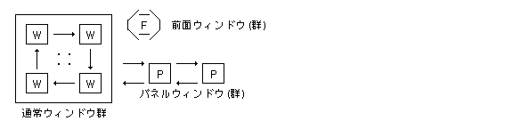
ウィンドウの表示上の前後関係は, 最前面から順番に以下のようになる.
最前面 (1) 前面ウィンドウ ｜ (2) パネルウィンドウ ｜ (3) 入力受付状態の従属ウィンドウ ｜ (4) 入力受付状態の主ウィンドウ ↓ (5) 入力不可状態の主ウィンドウ
パネルウィンドウが複数オープンされている場合は, オープンされた順番に最前面に表示され, 最前面に表示されているパネルウィンドウが入力受付状態を占有する. パネルウィンドウ間の前後関係の変更はできない.
前面ウィンドウが複数オープンされている場合の前後関係は以下のようになる.
オープンした時には一番前面に表示される.
移動 / 変形を行なった場合, その対象とした前面ウィンドウが一番前面に表示される. この場合, 他の前面ウィンドウの前後関係は変化しない.
入力受付状態の従属ウィンドウが複数オープンされている場合の前後関係は前面ウィンドウと同様である. なお, 入力不可状態, 即ち不可視状態になった場合は, 従属ウィンドウ間の前後関係は保持され, 再び入力受付状態となった場合に, 以前の前後関係が再現される.
オープンした時には一番前面に表示される.
移動 / 変形を行なった場合, その対象とした従属ウィンドウが一番前面に表示される. この場合, 他の従属ウィンドウの前後関係は変化しない.
主ウィンドウの間では, 入力受付状態の主ウィンドウが一番前面に表示される. 即ち, 新たに入力受付状態となった主ウィンドウが一番前面に表示される. この場合, 他の主ウィンドウの前後関係は変化しない.
なお, 内部ウィンドウに対しては, 前後関係は定義されない.
通常, 主ウィンドウはВіртуальний об'єкт (Virtual Object)に対してприкладний додаток / програмаを実行することにより生成されることが多い. この場合, 元となったВіртуальний об'єкт (Virtual Object)が存在していた主ウィンドウを生成された主ウィンドウの親ウィンドウと呼ぶ.
従って, 主ウィンドウ全体はその親子関係により木構造となっていることになる. 主ウィンドウの親子関係は画面上の表示には一切反映されないが, 主ウィンドウを閉じた場合は, その元となったВіртуальний об'єкт (Virtual Object)に戻ることになり, その結果, 親ウィンドウに入力受付状態が切換わることになる.
主ウィンドウの親ウィンドウは, ウィンドウのオープン時に指定されるが, オープン後も変更することが可能である. また, ウィンドウが閉じられた場合, そのすべての子ウィンドウの親ウィンドウは閉じたウィンドウの親ウィンドウに自動的に変更される.
主ウィンドウ以外のウィンドウに対しては, 親ウィンドウは定義されない.
親を持つウィンドウにはその生成の元となったВіртуальний об'єкт (Virtual Object)の表示上の領域が定義され, この領域を生成元と呼ぶ. 生成元は, 親ウィンドウ内の相対座標により定義される.
生成元も, ウィンドウのオープン時に指定されるが, オープン後も変更することが可能である. また, ウィンドウが閉じられた場合, そのすべての子ウィンドウの生成元は閉じたウィンドウの生成元と同じものに自動的に変更される.
なお, Віртуальний об'єкт (Virtual Object)の移動等に伴う, 親ウィンドウおよび生成元の変更は, Реальний об'єкт (Real Object) / Менеджер віртуальних об'єктів (VObject Manager)により行なわれる.
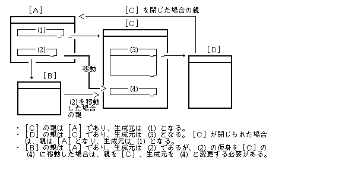
主ウィンドウには, 全面モードと通常モードが定義され, 交互に切り換えが可能となる.
全面モードでは, 主ウィンドウは画面一杯に拡がって表示され, 通常モードに戻すことにより, 元の位置, 大きさの表示に戻る.
全面モードで表示されている状態で, ウィンドウの移動 / 変形を行なった場合は, そのウィンドウの全面モード状態は解除され, 通常モードの表示と見なされることになる.
主ウィンドウ以外のウィンドウに対しては, このモードは定義されない.
全面モード, 通常モードの他に, システムПовідомлення (Message)パネルを含めたスクリーン全部に主ウィンドウを表示することができるフルスクリーンモードがある. この場合, システムПовідомлення (Message)パネルは隠れて見えなくなる.
ここでは, 通常ウィンドウ, および前面ウィンドウの標準的な表示形状に関して説明しているが, 表示形状の詳細はインプリメントに依存する. 内部ウィンドウ, パネルウィンドウに関しては, ウィンドウマネージャでは表示を行なわないため表示形状は定義されない.
ウィンドウは, 標準的に下図のように右下に影が付いた境界線により囲まれた矩形領域として表示される.
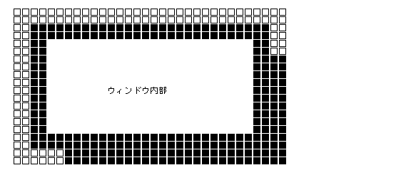
ウィンドウには, 通常, 最上部にタイトルバーが存在する. タイトルバーはピクトグラムと任意のタイトル文字列からなるが, ピクトグラムは無い場合もある. このタイトルバーの表示は虚身ウィンドウの状態では灰色化表示となる.
ウィンドウの大きさがприкладний додаток / програмаにより固定されていて変形不可の場合は, 作業領域の境界は上辺はタイトルバーのすぐ下であり, タイトルバーとの間に細線で作業領域の境界線が引かれる. 下, 左, 右辺はウィンドウの境界線が作業領域の境界線となる.
これに対し, 変形可能なウィンドウでは, 作業領域の境界は下, 左, 右辺においてウィンドウの境界線から半文字幅程度内側の部分となり, 細線で作業領域の境界線が引かれる.
タイトルバーを含む, 作業領域の境界線とウィンドウの境界線間の部分を総称してウィンドウの枠と呼ぶ.
変形可能なウィンドウの場合は, 枠の 4 隅の部分はハンドルでありウィンドウ変形の手掛かりとなる. また, スクロールバーが存在する場合は, 右, 下, ( さらに 3 方向の場合は左 ) の枠上に表示され, ハンドルとスクロールバーを除く枠の他の部分は, ウィンドウ移動の手掛かりとなる.
入力受付状態のウィンドウでは, 枠部分は灰色パターンで埋められ, スクロールバーは, Успішне виконанняに表示される. この時タイトルバーは, 角の丸い矩形で囲まれ, パターンで埋められない.
入力不可状態のウィンドウでは, 枠部分は白くなり, スクロールバーは不能状態表示となり, 灰色部分は境界線を残して白くなりトンボは表示されない. また作業領域内の各パーツ類の表示も不能状態表示となる.
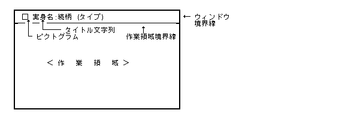
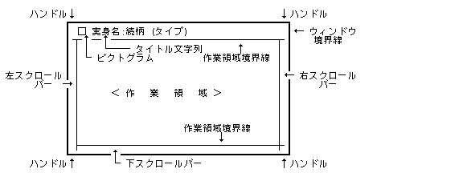
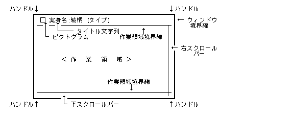
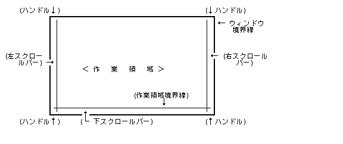
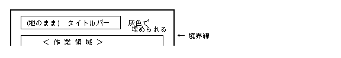
ウィンドウには, そのタイプ, 表示形状を表わすための以下に示す属性があり, ウィンドウの生成時に指定することができる. ウィンドウの属性は生成後は変更することはできない. 内部ウィンドウ, パネルウィンドウに対してはウィンドウ属性は定義されない.
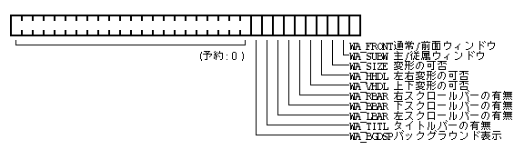
WA_FRONT | 0 = 通常ウィンドウ | |
| 1 = 前面ウィンドウ | ||
WA_SUBW | 0 = 主ウィンドウ | ( WA_FRONT = 0の時のみ有効) |
| 1 = 従属ウィンドウ | ||
WA_SIZE | 0 = ドラッグ変形不可のウィンドウ | |
| 1 = ドラッグ変形可能のウィンドウ | ||
WA_HHDL | 0 = 左右ドラッグ変形不可 | ( WA_SIZE = 1の時のみ有効) |
| 1 = 左右ドラッグ変形可能 | ||
WA_VHDL | 0 = 上下ドラッグ変形不可 | |
| 1 = 上下ドラッグ変形可能 | ||
WA_RBAR | 0 = 右スクロールバーの無 | |
| 1 = 右スクロールバーの有 | ||
WA_BBAR | 0 = 下スクロールバーの無 | |
| 1 = 下スクロールバーの有 | ||
WA_LBAR | 0 = 左スクロールバーの無 | |
| 1 = 左スクロールバーの有 | ||
WA_TITL | 0 = タイトルバー有のウィンドウ | |
| 1 = タイトルバー無のウィンドウ | ||
WA_BGDSP | 0 = 入力不可状態の時は表示を更新しない | |
| 1 = 入力不可状態の時も表示を更新する |
WA_SIZE, WA_TITL によりウィンドウの形状は決定される.
WA_HHDL, WA_VHDL が両方とも 1 の場合は任意方向へのドラッグ変形が可能なことを意味する. 両方とも 0 の場合はハンドルが存在しないことになる.
WA_BGDSP 指定のウィンドウにのみ, パネルの消去時に再表示要求が送られる.
ウィンドウの生成時に以下に示す表示属性を指定することができる. ウィンドウの表示属性は生成後は変更することはできない. 内部ウィンドウ, パネルウィンドウに対しては表示属性は定義されない. なお, カラーの実際の適用, および解釈方法はインプリメントに依存する.
typedef struct {
UW frame; /* 境界線幅/パターンデータ番号 */
UW tlbg; /* タイトル背景パターンデータ番号 */
UW barpat; /* スクロールバーのパターン部のパターン番号 */
UW barbg; /* スクロールバーの白部分のパターン番号 */
COLOR tlcol; /* タイトル文字色(負のときは default) */
} WDDISP;
frame の内容は以下の通りである.
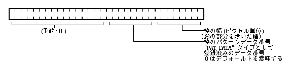
frame の内容
tlbg, barpat, barbg はそれぞれ,
"PAT_DATA"
タイプとして登録してあるデータ番号で指定し,
0 はデフォールトを意味する.
tlcol は, タイトル表示の色を指定し,
< 0の場合は, デフォールトを意味する.
デフォールト値はウィンドウマネージャにより適当な値が規定されているが, デフォールト値自体も変更可能である. デフォールト値を変更した場合は, 変更以後に生成された全てのデフォールト属性を持つウィンドウに反映される.
さらに, ウィンドウの作業領域の背景パターンを, ウィンドウの生成時に指定することができる. 背景パターンは, 基本的にディスプレイプリミティブで定義されるパターンデータの形式で指定される.
なお, 背景パターンはウィンドウの生成後も変更することができる.
PD がプレスされていない状態の場合, вказівник (Pointer)の形状は PD の位置により, その位置での可能な操作を意味する以下の形状に自動的に変更される. ただし PD がプレスされている状態では, вказівник (Pointer)の形状はその位置により変更はされない.
«命令»キーが押された状態では, вказівник (Pointer)の形状は, その位置に無関係に常に«プリメニュー»の形状に変更される.
«命令»キーが押されていない状態では, вказівник (Pointer)の位置に応じて, 以下に示すようにвказівник (Pointer)形状が変更される.
| 入力受付状態のウィンドウ内 | ハンドル部分 | ウィンドウ属性として左右変形のみ可 | 横方向の変形手 | ※ PD をプレスしてウィンドウのドラッグ変形を行なっている間は, «つまみ»の形状となる. |
| ウィンドウ属性として上下変形のみ可 | 縦方向の変形手 | |||
| ウィンドウ属性として任意の変形が可 | 変形手 | |||
| スクロールバーの見えている部分 | 右/左のスクロールバー | 縦方向の移動手 | ※ PD をプレスしてジャンプスクロールのドラッグを行なっている間は, «握り»の形状となる. | |
| 下のスクロールバー | 横方向の移動手 | |||
| スクロールバーの見えていない灰色部分 | 選択指 | |||
| ピクトグラムの部分 | 選択指 | ※ PD をプレスしてウィンドウのドラッグ移動を行なっている間は, «握り»の形状となる. | ||
| 上記以外のウィンドウの枠部分 | 移動手 | |||
| ウィンドウの作業領域内 | 形状は変更しない. | |||
| 入力受付状態のウィンドウ外 | 選択指 | |||
入力不可状態のウィンドウで, PD をプレスした場合はそのウィンドウに入力受付状態が移行するが, プレス位置が上記の場合は, вказівник (Pointer)の形状も入力受付状態の移行と同時に変化する.
このвказівник (Pointer)形状の変更は, ウィンドウマネージャがウィンドウПодія (Event)の処理の一貫として自動的に行なわれるため, прикладний додаток / програмаは, 作業領域外にвказівник (Pointer)が存在する場合は, そのвказівник (Pointer)形状を変更してはいけない. 逆に, прикладний додаток / програмаは, 入力受付状態のウィンドウの作業領域内にвказівник (Pointer)が存在する場合, そのвказівник (Pointer)形状を常に自分で設定しなくてはいけない (外側からвказівник (Pointer)が作業領域内に移動してきた場合, そのвказівник (Pointer)形状は保証されない).
以下に示すウィンドウの操作はприкладний додаток / програмаを含めた全体として実現すべきウィンドウの操作であり, прикладний додаток / програмаはウィンドウマネージャで用意されているфункціонал / підсистемаを使用してウィンドウ操作を実現することになる.
ウィンドウの入力受付状態とウィンドウの表示戦略はインプリメントに依存する. 下記は, インプリメントの一例である.
以下の操作により, 選択したВіртуальний об'єкт (Virtual Object)がウィンドウに開かれ, そのВіртуальний об'єкт (Virtual Object)の位置にウィンドウは生成されて最前面に表示される.
実行メニューによりприкладний додаток / програмаを起動する.
ピクトグラムをダブルクリックする.
小物メニューによりある種の小物прикладний додаток / програмаを起動することにより, 小物ウィンドウが開かれて最前面に表示される. 小物によっては, 前面ウィンドウが開かれる場合がある.
従属ウィンドウは, 既に開かれている主ウィンドウのприкладний додаток / програмаにより直接開かれる.
生成されたウィンドウは, 常に入力受付状態となる.
ウィンドウ内でクリック ( プレス ) によりそのウィンドウは入力受付状態となり, 最前面に表示される.
ウィンドウの生成元であるВіртуальний об'єкт (Virtual Object) ( 影付き ) に対しウィンドウに開く操作を行なった場合, 新たなウィンドウは生成されず, 既に存在している対応するウィンドウが入力受付状態となり, 最前面に表示される.
表示管理メニューにより指定することにより, そのウィンドウは入力受付状態となり, 最前面に表示される.
他のウィンドウが入力受付状態となることにより, そのウィンドウは入力受付状態でなくなる.
ウィンドウ枠のハンドルと, スクロールバー以外の部分をドラッグすることによりウィンドウは移動できる.
枠をプレスした時点で, вказівник (Pointer)は一瞬«移動手»となる. ウィンドウが既に入力受付状態であった場合は, 枠上にвказівник (Pointer)が移動した時点で, «移動手»となる.
ドラッグ中はвказівник (Pointer)は«握り»となり, ウィンドウ枠の影がドラッグに合わせて移動する.
вказівник (Pointer)をシステムПовідомлення (Message)パネル上に移動すると, 影は消去される. вказівник (Pointer)をシステムПовідомлення (Message)パネル以外に移動すると, 再び影が表示される.
リリースにより, вказівник (Pointer)は«移動手»となり, その位置にウィンドウが移動し, 入力受付状態となり最前面に表示される. システムПовідомлення (Message)パネル上でリリースした場合は, ウィンドウの移動は取り消される.
なお, 移動によりウィンドウの一部が画面からはみ出ることもある.
ウィンドウ枠のハンドルをドラッグすることによりウィンドウは変形できる. 4 つの変形ハンドルは, それぞれの対角点を固定して得られる矩形にウィンドウを変形する.
ハンドルをプレスした時点で, вказівник (Pointer)は一瞬«変形手»となる. ウィンドウが既に入力受付状態であった場合は, 枠上にвказівник (Pointer)が移動した時点で, «変形手»となる.
ドラッグ中はвказівник (Pointer)は«つまみ»となり, ウィンドウ枠の影がドラッグに合わせて変形する.
変形の最大の大きさを越えた場合は, その大きさで影は追従しなくなる.
вказівник (Pointer)をシステムПовідомлення (Message)パネル上に移動すると, 影は消去される. вказівник (Pointer)をシステムПовідомлення (Message)パネル以外に移動すると, 再び影が表示される.
リリースにより, вказівник (Pointer)は«変形手»となり, その位置にウィンドウが変形され, 入力受付状態となり最前面に表示される. システムПовідомлення (Message)パネル上でリリースした場合は, ウィンドウの変形は取り消される.
表示メニューの«全面モード», およびハンドルのダブルクリックにより, 全面モードと通常モードの交互の切り換えが行なわれる.
以下の操作で, ウィンドウは消去される.
«終了»メニューを選択する.
ピクトグラムをダブルクリックする.
Віртуальний об'єкт (Virtual Object)から開かれたウィンドウの場合は, ウィンドウが消去された後, そのВіртуальний об'єкт (Virtual Object)を含むウィンドウが入力受付状態となる.
#define WA_FRONT 0x0001 /* 前面ウィンドウ */ #define WA_SUBW 0x0002 /* 従属ウィンドウ */ #define WA_SIZE 0x0004 /* 変形可 */ #define WA_HHDL 0x0008 /* 左右変形可 */ #define WA_VHDL 0x0010 /* 上下変形可 */ #define WA_RBAR 0x0020 /* 右スクロールバー有 */ #define WA_BBAR 0x0040 /* 下スクロールバー有 */ #define WA_LBAR 0x0080 /* 左スクロールバー有 */ #define WA_TITL 0x0100 /* タイトルバー無 */ #define WA_BGDSP 0x0200 /* 入力不可状態の時も表示を更新 */ #define WA_FULL 0x0400 /* 全面モード */ #define WA_SFULL 0x0800 /* フルスクリーン */ #define WA_STD 0 /* 正規座標でウィンドウ枠を指定 */ #define WA_WORK 0x1000 /* 作業領域座標でウィンドウ枠を指定 */ #define WA_FRAME 0x2000 /* 外枠座標でウィンドウ枠を指定 */ #define WA_FMOVE 0x4000 /* オープン時, 画面内に強制移動 */ #define WA_NORMAL 0x007c /* 通常 (変形可, 右/下スクロールバー) */
WA_SIZE を指定していない場合は,
WA_HHDL で左右のウィンドウ枠が広くなり,
WA_VHDL で上下のウィンドウ枠が広くなる.
WA_FULL の指定により,
はじめから全面モードでウィンドウを開くことができる.
WA_STD, WA_WORK, WA_FRAME の指定により,
入出力に使用する枠座標を指定することができる. これは,
wopn_wnd, wget_sts, wmov_wnd, wmov_drg, wrsz_wnd, wrsz_drg
に影響する.
WA_FMOVE の指定により,
wopn_wnd 時にウィンドウが完全に画面からはみ出していた場合
(実際には 8〜16 ドット程度の余裕を持つ),
最低でもウィンドウの一部が画面に表示されるように移動される.
WA_SFULL の指定によるフルスクリーンのウィンドウを,
複数開くことができるが, 新しく開いたウィンドウが常に上に位置し,
ウィンドウの配置を変更することはできない.
ウィンドウの生成時に以下に示す表示属性を指定することができる. ウィンドウの表示属性は生成後は変更することはできない. 内部ウィンドウ, パネルウィンドウに対しては表示属性は定義されない. なお, カラーの実際の適用, および解釈方法はインプリメントに依存する.
typedef struct {
UW frame; /* 境界線幅/パターンデータ番号 */
UW tlbg; /* タイトル背景パターンデータ番号 */
UW barpat; /* スクロールバーのパターン部のパターン番号 */
UW barbg; /* スクロールバーの白部分のパターン番号 */
COLOR tlcol; /* タイトル文字色(負のときは default) */
} WDDISP;
ウィンドウには必ずその管理Процес (Process)が存在し, 管理Процес (Process)によりそのウィンドウの表示 / 操作処理が行なわれる. ウィンドウを生成したПроцес (Process)がそのウィンドウの管理Процес (Process)となる.
ウィンドウに対する以下に示すような各種の操作は, すべてウィンドウの管理Процес (Process)が自分で行なうことになる.
1 つのПроцес (Process)は, 複数のウィンドウの管理Процес (Process)となることもできる. また, 主ウィンドウとその従属ウィンドウは必ず同一の管理Процес (Process)により管理される.
入力受付状態の主ウィンドウまたはパネルウィンドウの管理Процес (Process)を, アクティブПроцес (Process)と呼び, ある時点で唯一存在することになる. アクティブПроцес (Process)は KB, PD からのПодія (Event)を順次取り出し, その処理を行なうことになる.
入力受付状態でないウィンドウの管理Процес (Process)は, 通常は待機状態であり, 入力受付状態の切り換え待ちの状態となっている. この場合, 待機状態とならず, ウィンドウ内の表示を続行しても構わない. ただし, この場合は表示のみであり, ユーザからの入力を受け取ることはできない.
従って, 全体としてウィンドウを処理しているПроцес (Process)群は, 入力受付状態をお互いにパスしあい, アクティブПроцес (Process)を切り換えながら動作していることになる. 入力受付状態は, 通常 PD の操作により切り換えられるが, それ以外にもプログラムで切り換えることができる.
前面ウィンドウは, 常に入力受付状態であるが, Подія (Event)の取り扱いに関してはフロントエンドとしての動作をするため特殊な構造となっている.
前面ウィンドウの管理Процес (Process)は前面ウィンドウを生成したПроцес (Process)であるが, 実際の管理Процес (Process)は現在のアクティブПроцес (Process)と見なされて処理される. 即ち, 前面ウィンドウに対する要求Подія (Event)等は, 生成した管理Процес (Process)ではなく, 現在のアクティブПроцес (Process)に対して送られる. ウィンドウは基本的にそのウィンドウを生成したПроцес (Process)により管理され, 基本的にはПроцес (Process)依存であるが, 自分が生成した以外のウィンドウの管理情報等を参照する場合があるため, ウィンドウID自体はПроцес (Process)グローバルであり, またウィンドウの管理情報もすべてのПроцес (Process)からアクセスできる必要がある.
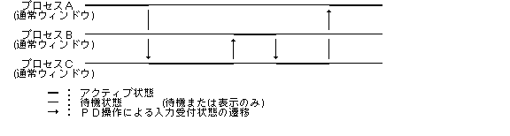
ウィンドウを使用するприкладний додаток / програмаは, KB や PD 等の操作に伴うПодія (Event)を順次取り出して対応する処理を行なうが, Подія (Event)の取り出しは, 核のПодія (Event)管理функціонал / підсистемаを直接使用するのではなく, ウィンドウマネージャで提供しているウィンドウПодія (Event)функціонал / підсистемаを使用する.
ウィンドウПодія (Event)функціонал / підсистемаでは, 核のПодія (Event)管理функціонал / підсистемаに加えて以下のようなфункціонал / підсистемаが追加されている.
ウィンドウПодія (Event)の内容を以下に示す.
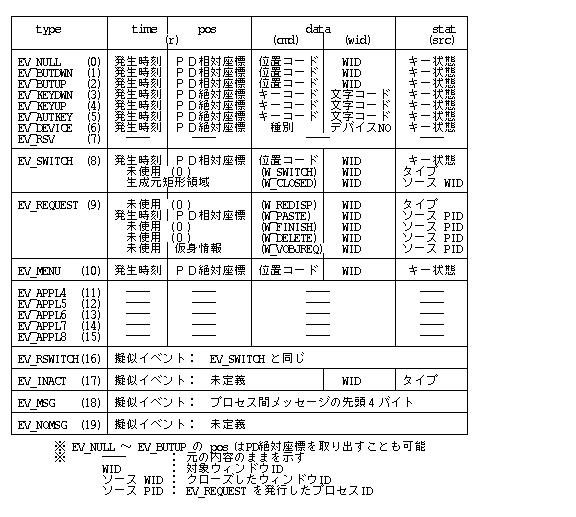
EV_SWITCH, EV_REQUEST,
および EV_MENU は,
ウィンドウПодія (Event)として新たに追加されたПодія (Event)である.
これらのПодія (Event)はПодія (Event)タイプとして
EV_APPL1〜3 を使用しているため,
прикладний додаток / програмаは,
このタイプを使用してはいけない.
また, EV_RSWITCH 〜 EV_NOMSG
は擬似Подія (Event)として追加されているものである.
ウィンドウПодія (Event)タイプとして以下のようなタイプが定義されており,
Подія (Event)のタイプに応じて,
EVENT, SEVENT, REVENT
の 4 つの形式を使い分けて使用する.
typedef struct SEVENT { /* 切換Подія (Event)形式 */
W type;
UW time;
PNT pos;
H cmd; /* 位置コードコマンド */
H wid;
UW stat;
} SEVENT;
typedef struct REVENT { /* 要求Подія (Event)形式 */
W type;
RECT r; /* 対象矩形領域 (相対座標) */
H cmd;
H wid; /* 対象ウィンドウID */
W src; /* ソースPID/他 */
} REVENT;
typedef struct GEVENT { /* 一般Подія (Event)形式 */
W type;
H data[4]; /* 任意のデータ */
H cmd;
H wid;
W src;
} GEVENT;
typedef union _WEVENT {
EVENT e; /* 生Подія (Event)(核Подія (Event)) */
SEVENT s; /* 切換Подія (Event)形式 */
REVENT r; /* 要求Подія (Event)形式 */
GEVENT g; /* 一般Подія (Event)形式 */
} WEVENT;
○ EV_NULL
有効なПодія (Event)が何も存在していない場合に得られるПодія (Event)であり, PD の位置するウィンドウ ID, 位置コード, および PD の現在位置 ( 対応するウィンドウの相対座標 ) が設定されている. PD の現在位置は, Подія (Event)の取り出し時の指定により絶対座標のままとすることも可能である. PD の位置にウィンドウが存在しない場合はウィンドウ ID = 0, システムПовідомлення (Message)パネル上であれば -1 となる.
位置コードは PD の位置がウィンドウのどの位置であるかを示す以下のコードである.
| 位置コード | W_WORK (0) | 作業領域内 | |
W_FRAM (1) | ウィンドウ枠 | ||
W_PICT (2) | ピクトグラム | 対応する部分が存在しないウィンドウの場合は, すべてW_FRAMとなる. | |
W_TITL (3) | タイトル文字列 | ||
W_LTHD (4) | ハンドル (左上) | ||
W_RTHD (5) | ハンドル (右上) | ||
W_LBHD (6) | ハンドル (左下) | ||
W_RBHD (7) | ハンドル (右下) | ||
W_RBAR (8) | 右スクロールバー | ||
W_BBAR (9) | 下スクロールバー | ||
W_LBAR (10) | 左スクロールバー |
このПодія (Event)は, アクティブПроцес (Process)のみが得ることができる.
○ EV_BUTDWN
PD のプレスにより発生するПодія (Event)であり, PD の位置するウィンドウ ID, 位置コード, および PD のプレス位置 ( 対応するウィンドウの相対座標 ) が設定されている. PD のプレス位置は, Подія (Event)の取り出し時の指定により絶対座標のままとすることも可能である.
このПодія (Event)は, アクティブПроцес (Process)のみが得ることができる.
PD のプレスは, その状態 / 位置により,
EV_MENU, EV_SWITCH
または EV_BUTDWN のПодія (Event)として取り出される.
EV_MENU
EV_BUTDWN
EV_SWITCH
EV_SWITCH
を得る.
Подія (Event)取り出し時の指定により,
入力受付状態の切換えを行なわず, EV_BUTDWN
として取り出すこともできる.
○ EV_BUTUP
PD のリリースにより発生するПодія (Event)であり, PD の位置するウィンドウ ID, 位置コード, および PD のリリース位置 ( 対応するウィンドウの相対座標 ) が設定されている. PD のリリース位置は, Подія (Event)の取り出し時の指定により絶対座標のままとすることも可能である.
このПодія (Event)は, アクティブПроцес (Process)のみが得ることができる.
○ EV_KEYDWN/EV_KEYUP/EV_AUTKEY
KB のプレス, リリース, 連続プレスにより得られるПодія (Event)であり, 核のПодія (Event)マネージャで得られたПодія (Event)そのものである. 従って, PD 位置は絶対座標となる.
このПодія (Event)は, アクティブПроцес (Process)のみが得ることができる.
○ EV_DEVICE/EV_RSV
○ EV_APPL4〜8
核のПодія (Event)マネージャで得られたПодія (Event)そのものである. このПодія (Event)は, アクティブПроцес (Process)のみが得ることができる.
○ EV_SWITCH
入力受付状態のウィンドウの切換えが発生したことを示すПодія (Event)であり, 切換えの結果, 新たにアクティブПроцес (Process)となったПроцес (Process)のみが得ることのできるПодія (Event)である.
このПодія (Event)を取り出した時点では,
既に wid
で示されるウィンドウに入力受付状態は切り換わっており,
прикладний додаток / програмаはそのウィンドウに対する通常の処理を行なうことになる.
Подія (Event)内の cmd は以下の内容であり,
切り換えの状態または原因を示す.
cmd : 位置コード (W_WORK (0)〜W_LBAR (10))
W_SWITCH (128)
W_CLOSED (129)
位置コードの場合は,
PD のプレスにより入力受付状態の切換えが発生したことを意味し,
プレスした位置の位置コード,
および相対座標位置が入っている.
прикладний додаток / програмаはこのПодія (Event)を
EV_BUTDWN として処理する必要がある.
W_SWITCH の場合は,
прикладний додаток / програмаからの要求による入力受付状態の切り換え,
または,
パネルのクローズによる入力受付状態の切り換えが発生したことを意味し,
PD の位置に関する情報は存在しない.
src は以下の内容であり, 切り換えの原因を示す.
src : 0 ウィンドウの切り換え
1 パネルのクローズ
W_CLOSED の場合は,
子ウィンドウがクローズされたため親ウィンドウに入力受付状態が切換わったことを意味し,
この時点では,
既に子ウィンドウはクロージングアニメーションとともに削除されている.
src には, クローズした子ウィンドウのウィンドウIDが入り,
r には, 生成元の矩形領域が相対座標で入っている.
○ EV_REQUEST
ウィンドウマネージャ, または他のПроцес (Process)からの各種の処理の要求およびそれに対する応答を示すПодія (Event)であり, 対象とするウィンドウの管理Процес (Process)が得るものであり, アクティブПроцес (Process)と非アクティブПроцес (Process)の両方から取り出される.
cmd は要求する処理内容を示す以下のものである.
cmd : W_REDISP (0) -- ウィンドウの再表示要求
W_PASTE (1) -- データの貼り込み要求
W_DELETE (2) -- ウィンドウのクローズ要求
W_FINISH (3) -- 処理の終了要求
W_VOBJREQ(4) -- Віртуальний об'єкт (Virtual Object)の再表示要求
W_OPENED (5) -- ウィンドウのオープン通知
: :
W_ACK (0x40)+(要求コード) -- 要求に対するACK応答
W_NAK (0x80)+(要求コード) -- 要求に対するNACK応答
W_REDISP は,
ウィンドウの再表示を要求するもので,
ウィンドウの操作に伴って,
ウィンドウの再表示が必要になった場合にウィンドウマネージャが発生するПодія (Event)である.
このПодія (Event)を得た場合は,
прикладний додаток / програмаは対応するウィンドウの再表示を速やかに行なわなくてはならない.
src =0 : 通常再表示要求
=1 : パネル再表示要求
W_REDISP 以外のものは,
ウィンドウマネージャとしては特別な処理を行なわず,
要求Подія (Event)の送付,
および応答Подія (Event)の送付を行なう.
要求Подія (Event)の src
にはウィンドウマネージャにより要求したПроцес (Process) ID が設定され,
応答Подія (Event)の宛先として使用される.
各要求Подія (Event)は, 以下の意味を持つ.
W_PASTE:
ドラッグによるデータの移動 / 複写のために使用され,
移動 / 複写先のウィンドウに対して移動 / 複写元のПроцес (Process)がこのПодія (Event)を送信する.
このПодія (Event)を受信したПроцес (Process)は速やかに要求された貼り込み処理を行ない,
必ず, W_ACK または W_NAK
の応答を戻さなくてはいけない.
W_DELETE:
ウィンドウのクローズ要求のために使用される.
このПодія (Event)を受信したПроцес (Process)は速やかにウィンドウのクローズ処理を行ない, 必ず W_ACK ( または W_NAK )
の応答を戻さなくてはいけない.
W_FINISH:
処理の終了要求のために使用される.
このПодія (Event)を受信したПроцес (Process)は即座に処理を終了し,
必ず W_ACK ( または W_NAK )
の応答を戻さなくてはいけない.
W_VOBJREQ:
Віртуальний об'єкт (Virtual Object)に対する各種の操作 / 表示要求を行なうために使用され, Реальний об'єкт (Real Object) / Менеджер віртуальних об'єктів (VObject Manager)が送信する. このПодія (Event)を受信したПроцес (Process)は, 速やかに要求された処理を行なわなくてはいけない. 応答は不要である. 詳細は, «3.8 Реальний об'єкт (Real Object)／Менеджер віртуальних об'єктів (VObject Manager)» を参照のこと.
W_OPENED:
子Процес (Process)が親Процес (Process)に対して, 新たにオープンしたウィンドウ ID を通知するために使用する. 一般に応答は不要である.
○ EV_MENU
メニューボタンがプレスされた場合, もしくは PD のプレス時に命令キーがプレスされていた場合に得られるПодія (Event)であり, メニューの表示を行なうことを意味する. PD 位置は絶対座標であるが, 対応するウィンドウ ID および位置コードが設定されている.
このПодія (Event)は, アクティブПроцес (Process)のみが得ることができる.
○ EV_RSWITCH
擬似Подія (Event)であり, EV_SWITCH
と同様の意味を持ち,
得られるПодія (Event)の内容も, type 以外は EV_SWITCH
の場合と同一であるが,
入力受付状態が切り換わったことにより,
対応するウィンドウの再表示が必要であることを意味している.
○ EV_INACT
擬似Подія (Event)であり,
対応するウィンドウが入力受付状態から入力不可状態に切り換わった場合に得られる.
Подія (Event)の内容には,
入力不可状態に切り換わったウィンドウ ID が ( wid )
に設定されている.
src は以下の内容であり, 切り換えの原因を示す.
src : 0 ウィンドウの切り換え
1 パネルのオープン
このПодія (Event)は, EV_SWITCH と必ず対になって得られる
(ただし, EV_SWITCH の W_CLOSED
コマンドの場合は, EV_INACT は発生しない).
このПодія (Event)は, アクティブПроцес (Process)のみが得ることができ, このПодія (Event)を得た以降は通常, アクティブПроцес (Process)でなくなる.
○ EV_MSG
擬似Подія (Event)であり,
通常のПроцес (Process)間Повідомлення (Message)が得られたことを意味する.
Подія (Event)の内容には,
type の後にПовідомлення (Message)の先頭4バイトが設定されている.
Повідомлення (Message)自体はПовідомлення (Message)キューに残っているので,
rcv_msg() によりПовідомлення (Message)を取り出す必要がある.
このПодія (Event)は,
アクティブПроцес (Process)と非アクティブПроцес (Process)の両方から取り出される.
○ EV_NOMSG
擬似Подія (Event)であり,
Подія (Event),
またはПовідомлення (Message)が発生してない場合に得られ,
Подія (Event)の内容には type 以外は何も設定されない.
このПодія (Event)は, 非アクティブПроцес (Process)のみが得ることができ,
EV_NULL に相当する.
ウィンドウПодія (Event)処理は, 要求したПроцес (Process)がアクティブПроцес (Process)か否かで大きくその内部処理が異なる.
アクティブПроцес (Process)の場合は, 核Подія (Event)を取り出し, 対応するウィンドウのサーチ, 相対座標への変換, メニュー指定のチェック, вказівник (Pointer)形状の変更, 入力受付状態の切り換え等の処理を行なったのち, 必要に応じて後述するフロントエンド処理を行ない, ウィンドウПодія (Event)として戻す.
非アクティブПроцес (Process)の場合は, Повідомлення (Message)を取り出し,
内部Подія (Event)Повідомлення (Message)として得られた EV_SWITCH,
EV_REQUEST をウィンドウПодія (Event)として戻す.
この場合, 他のПовідомлення (Message)も受信するため,
内部Подія (Event)Повідомлення (Message)以外のПовідомлення (Message)を受信した場合は,
その旨を戻すことになる.
またПовідомлення (Message)受信を待つか否かの指定を行なうことが可能で,
待たない指定を行なった場合でПовідомлення (Message)が何も無かった場合は,
その旨を戻す ( EV_NOMSG ).
入力受付状態でない ( 即ち非アクティブПроцес (Process) ) 状態で, ウィンドウの表示を更新する場合は, 待たない指定を行なう必要がある.
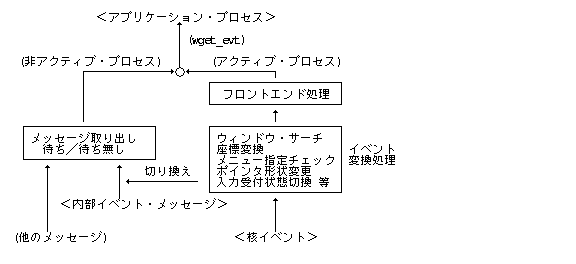
内部Подія (Event)Повідомлення (Message)は入力受付状態の切り換え, ウィンドウの再表示要求, フロントエンド処理等の際に, ウィンドウПодія (Event)をウィンドウの管理Процес (Process)間で受け渡すために使用されるПовідомлення (Message)であり, その詳細はウィンドウマネージャのインプリメントに依存する.
内部Подія (Event)Повідомлення (Message)用に, MS_MNG1 と MS_MNG2
の 2 つのПовідомлення (Message)タイプが使用されるため,
прикладний додаток / програмаはこの 2 つのПовідомлення (Message)タイプを使用してはいけない.
フロントエンドфункціонал / підсистемаは, アクティブПроцес (Process)が取り出す, ウィンドウПодія (Event)を横取りして, Подія (Event)の前処理等を行なうфункціонал / підсистемаであり, «Клавіатура (Keyboard)表小物»等の特殊なприкладний додаток / програмаにより使用される. フロントエンドфункціонал / підсистемаを使用する特殊なПроцес (Process)をフロントエンドПроцес (Process)と呼ぶ.
フロントエンドПроцес (Process)は, 画面表示を必要とする場合, 前面ウィンドウを使用することができ, 各種のウィンドウ操作関数を特別な制限なしで使用することができる. 逆に前面ウィンドウ以外のウィンドウを使用することはできない.
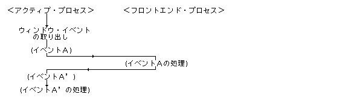
フロントエンドПроцес (Process)は wdef_fep(1) により定義され,
同時に最大 4 個まで定義できる.
フロントエンドПроцес (Process)は, すべての処理を終了した時点で
wdef_fep(0) により,
フロントエンドПроцес (Process)でなくなるが,
そのПроцес (Process)が終了した場合は自動的にフロントエンドПроцес (Process)としての定義から外される.
フロントエンドПроцес (Process)が定義されている状態では, フロントエンドПроцес (Process)が実質的なアクティブПроцес (Process)として取り扱われ, 元のアクティブПроцес (Process)は擬似アクティブПроцес (Process)となり, 非アクティブПроцес (Process)と同様にПовідомлення (Message)待ち状態となる. なお, フロントエンドПроцес (Process)の存在はウィンドウの表示には一切影響しない.
複数のフロントエンドПроцес (Process)が定義されている場合は, 最後に定義されたフロントエンドПроцес (Process)が実質的なアクティブПроцес (Process)として取り扱われ, 他はすべて擬似アクティブПроцес (Process)となり, Повідомлення (Message)待ち状態となる.
フロントエンドПроцес (Process)が定義されている場合のウィンドウПодія (Event)の流れの詳細を以下に示す.
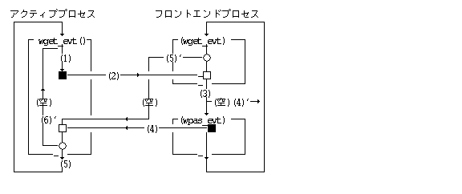
(1) アクティブПроцес (Process)がウィンドウПодія (Event)を取り出す.
(2) フロントエンドПроцес (Process)に取り出したПодія (Event)を渡す.
(3) フロントエンドПроцес (Process)は渡されたПодія (Event)を取り出して処理する.
(4) フロントエンドПроцес (Process)は処理後のПодія (Event)を戻す.
(5) アクティブПроцес (Process)はフロントエンドПроцес (Process)から戻された処理後
のПодія (Event)を取り出す.
(4)' フロントエンドПроцес (Process)が, Подія (Event)を処理して戻す必要が無い場合.
(5)' アクティブПроцес (Process)に«空»Подія (Event)を戻す.
(6)' アクティブПроцес (Process)は«空»Подія (Event)を受け取ると,
再度ウィンドウПодія (Event)を取り出す. ((1)に戻る)
複数のフロントエンドПроцес (Process)が定義されている場合は, 最後に定義されたフロントエンドПроцес (Process)に最初にПодія (Event)が渡される. この場合のウィンドウПодія (Event)の流れの詳細を以下に示す ((4)'(5)'のパスは省略している).
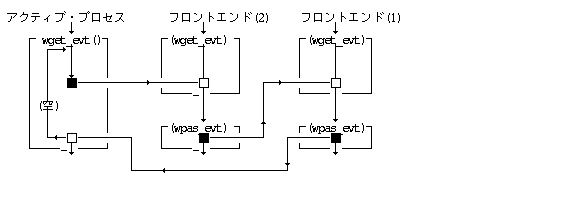
フロントエンドПроцес (Process)の標準的な動作は以下に示すものとなる.
wdef_fep(1) によりフロントエンドПроцес (Process)となる.
通常のПроцес (Process)と同様に, wget_evt (*evt, WAIT) により,
Подія (Event)を取り出して,
その処理を行なうПодія (Event)ループの構造となる.
wpas_evt()
によりПодія (Event)を戻す点のみが通常のПроцес (Process)と異なることになる.
得られたПодія (Event)の処理は, 基本的に以下の 3 種類のいずれかとなる.
そのまま何もせずに wpas_evt() で戻す
自分の前面ウィンドウ以外に対するEV_REQUEST, 自分の前面ウィンドウ以外でのEV_BUTDWN等
対応する処理を行なった後, 得られたПодія (Event)をそのまま,
または変換して wpas_evt() で戻す
EV_NULL
EV_NULL を戻す.
Клавіатура (Keyboard)小物の場合の例 :
EV_KEYDWN
EV_BUTDWN
EV_KEYDWN を生成して戻す.
対応する処理を行ない, Подія (Event)を戻さない( (空)Подія (Event)を戻す)
自分の前面ウィンドウに対する再表示要求等の EV_REQUEST,
自分の前面ウィンドウに対する PD プレスで, 移動, 変形操作 等
wget_evt()では,
Повідомлення (Message)キューのチェックは行なわれないため,
Подія (Event)ループ内で自分でチェックする必要がある.
処理を終了する場合は, wdef_fep(0) により,
フロントエンドПроцес (Process)であることをやめる.
フロントエンドПроцес (Process)には, wdef_fep(1)
で定義される一般フロントエンドПроцес (Process)と,
wdef_fep(-1)
で定義される特殊フロントエンドПроцес (Process)の2つがある.
一般フロントエンドПроцес (Process)に渡されるПодія (Event)は,
アクティブПроцес (Process)が,
RAWEVT / DRGEVT 以外の指定で,
wget_evt()を実行して取り出したПодія (Event)のみであり,
他の関数 ( mov_drg, wrsz_drg, wget_drg, wchk_dck )
で内部的に取り出されたПодія (Event),
および RAWEVT / DRGEVT 指定での wget_evt()
で取り出されたПодія (Event)は渡されない.
特殊フロントエンドПроцес (Process)には,
他の関数
( wmov_drg, wrsz_drg, wget_drg, wchk_dck )
で内部的に取り出されたПодія (Event)も含めて,
すべてのПодія (Event)が渡される.
これは, Подія (Event)のレコーディングやプレイバックの特殊用途に使用される.
ウィンドウの入力受付状態の切り換え, 移動, 変形, 削除, 全面モードの解除等の操作を行なった場合, 他のウィンドウにオーバーラップされて隠れていた部分が見えてきた場合のウィンドウ内容の再表示を行なう必要がある.
この場合, 実際の再表示は, そのウィンドウの管理Процес (Process)が行なうことになるが, 再表示が必要なウィンドウ, およびそのウィンドウ内の再表示が必要な領域の管理はウィンドウマネージャが行ない, ウィンドウの管理Процес (Process)に対して, 再表示要求Подія (Event)を発行する.
ウィンドウマネージャのインプリメントによっては隠れた部分のイメージを保持し, 再表示を自動的に行なうことも考えられるが, この場合は管理Процес (Process)側に再表示要求Подія (Event)が送られないことになるが, 基本的にすべてのприкладний додаток / програмаは再表示要求Подія (Event)に対する再表示処理を行なう必要がある.
各ウィンドウは, 再表示が必要な領域を矩形の集合 ( 矩形リスト ) として保持しており, ウィンドウの新たな再表示が必要になった時点で更新され, ウィンドウに対しての再表示要求Подія (Event)が発行される. この場合, 操作の対象となったウィンドウ ( 通常は入力受付状態のウィンドウ ) に対しては, 再表示領域は更新されるが, 再表示要求Подія (Event)は発行されず, ウィンドウ操作関数の関数値として再表示の必要性の有無が戻ることになる.
再表示要求Подія (Event)は, src
フィールドの値により以下のタイプに分類される.
src = 0 : 通常再表示要求
他のウィンドウの移動/変形等により再表示が必要になった場合に発生する.
src = 1 : パネル再表示要求
パネルウィンドウが削除された場合に,
パネルに隠された部分の描画をパネル表示中に行なった可能性があるウィンドウに対して発生する.
この場合は,
パネルに隠された部分の描画を実際に行なわなかった場合は,
再表示を行なう必要はないが,
後述する wsta_dsp() 〜 wend_dsp()
は実行する必要がある.
прикладний додаток / програмаは再表示要求Подія (Event)を受け取った場合, またはウィンドウ操作の結果として, 対象ウィンドウの再表示が必要となった場合に, 以下の処理を行なう必要がある.
ウィンドウの描画環境の前置長方形リストは新しい配置のものが設定されており, 他のウィンドウにはみでて描画できないことが保証されている.
wsta_dsp() により再表示が必要な矩形領域を取り出すと共に,
再表示処理の開始を宣言する.
wsta_dsp() で取り出した矩形領域の再描画を行なう.
この場合, 作業領域全体の再描画を行なっても問題ないが,
処理の高速化のためには最低限の描画が望ましい.
再表示が完了した場合は, wend_dsp() を実行し,
再表示の完了を宣言する.
再表示領域の更新処理,
および wsta_dsp(), wend_dsp() に対する処理は,
ウィンドウマネージャにより以下のように行なわれる.
再表示領域が空の場合は, 新たな再表示領域を設定し, 再表示要求Подія (Event)を発行する.
再表示領域が空でなく, 再表示処理中状態でない場合は, 以前の再表示領域と新たな再表示領域をマージする. 再表示要求Подія (Event)は発行しない.
再表示領域が空でなく, 再表示処理中状態の場合は, 再表示領域をペンディングとする. 既にペンディングの再表示領域が存在する場合は, その領域と新たな再表示領域をマージする. 再表示要求Подія (Event)は発行しない.
wsta_dsp() が実行された場合は,
再表示領域を戻し, その領域が空でない場合は,
再表示処理中状態とする.
wend_dsp() が実行された場合で,
再表示処理中状態の場合は, 再表示領域を空とする.
この時, ペンディングの再表示領域が存在する場合は,
その領域を再表示領域として設定し, wend_dsp()
の関数値として "1" を戻す.
ペンディングの再表示領域が存在しない場合は,
関数値として "0" を戻す.
再表示処理中状態でない場合は,
何もせずに関数値 "0" を戻す.
複数のウィンドウの再表示が必要な場合, 再表示要求Подія (Event)の送信順番は特に規定しないが, 実際の画面上で自然に見えることが望ましい.
ウィンドウに対するある種の操作を行なった場合は,
他のウィンドウに再表示要求Подія (Event)が送信される可能性があるが,
прикладний додаток / програмаは特にそのことを意識する必要はなく,
また他ウィンドウの再表示の完了を待つ必要もないが,
wchk_dsp() により,
他ウィンドウの再表示領域の有無をチェックすることができる.
内部ウィンドウに対しては再表示要求Подія (Event)は送られず, 内部ウィンドウを削除した場合には再表示要求Подія (Event)は発生しない.
パネルウィンドウに対しては再表示要求Подія (Event)は送られないが, パネルウィンドウを削除した場合には, 以下に示す再表示要求Подія (Event)が発生する.
CLR 指定でパネルウィンドウが閉じられた場合 :
パネルで隠れていたウィンドウに対して通常の再表示要求Подія (Event)が発生する.
NOCLR 指定でパネルウィンドウが閉じられた場合:
パネルで隠れていたウィンドウで,
WA_BGDSP
属性を指定したウィンドウに対してパネル再表示要求Подія (Event)が発生する.
パネルウィンドウの消去時にも通常の再表示要求Подія (Event)が発生する.
前面ウィンドウに対しては, 通常のウィンドウと同様に再表示要求Подія (Event)が送られ, 前面ウィンドウの移動 / 変形 / 削除により, 再表示要求Подія (Event)が発生する. ただし, 前面ウィンドウに対する再表示要求Подія (Event)は前面ウィンドウの管理Процес (Process)ではなく, その時にアクティブПроцес (Process)に対して送られる点が通常ウィンドウの場合と異なる.
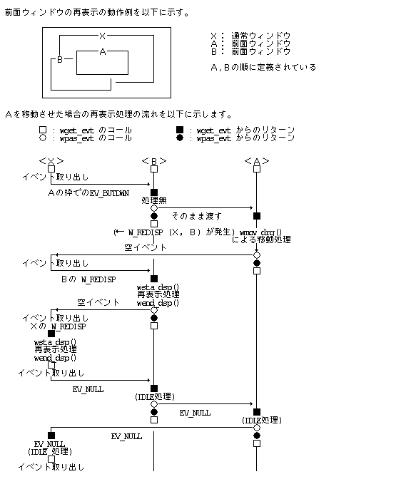
ウィンドウの表示管理のためのфункціонал / підсистемаとして, «表示管理メニュー»によるウィンドウの操作функціонал / підсистемаが提供される.
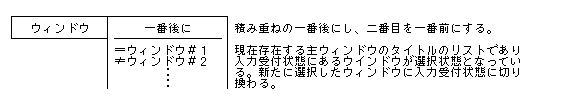
入力受付状態の切り換えでは, wswi_wnd()
を実行した場合と同様の処理となり,
切り換わった先のウィンドウに W_SWICTH Подія (Event)が送られ,
切り換わった元のウィンドウには EV_INACT が送られる.
прикладний додаток / програмаプログラムはウィンドウマネージャにより生成されたウィンドウ内で表示を行なう必要があるが, прикладний додаток / програмаプログラムからは直接ディスプレイ関数を使用することにより実際の描画を行なう.
ウィンドウマネージャはウィンドウ毎に独立した描画環境を生成するので, прикладний додаток / програмаはウィンドウに対応する描画環境 ID を取り出して, その描画環境上でディスプレイ関数を実行して実際の描画を行なう.
ウィンドウ生成時に同時に生成される描画環境には, 以下の設定が行なわれている.
画面Оперативна пам'ять (Memory)を示すビットマップ
座標系は作業領域の左上が ( 0, 0 )となる
作業領域の矩形
作業領域の矩形
ウィンドウの配置に対応した矩形リスト
描画環境の生成時の初期値
上記のうち, ビットマップ, フレーム長方形, 前置長方形リストは, ウィンドウマネージャが管理しており, ウィンドウの移動/変形等に伴って変更されるため, прикладний додаток / програмаでは変更してはならない. 表示長方形, 文字属性等のその他のデータはприкладний додаток / програмаで自由に設定することができ, ウィンドウマネージャにより変更されることはない.
不可視状態の従属ウィンドウに対応する描画環境では, フレーム長方形が空 ( 0, 0, 0, 0 ) に設定され, 描画を行なっても, 実際には無視されることになる.
ウィンドウのオープン時には, 作業領域の左上が ( 0, 0 ) となるように描画環境の座標系が設定され, これを相対座標と呼ぶ.
作業領域内は, オープン時に指定した背景パターンで塗り潰される.
ウィンドウの移動では作業領域の左上の座標値は変化しないが, ウィンドウの右下方向への変形以外のウィンドウの変形およびスクロール処理では, 作業領域の左上の点はウィンドウの変化に対応して変化することになる. 例えば, 上方向へ 20 ドットスクロールした場合は, 作業領域の点 ( 0 , 0 ) は ( 0 , 20 ) となる.
また, ウィンドウを左上方向に ( 20, 20 ) 拡大した場合は, 以下の図のようになる.
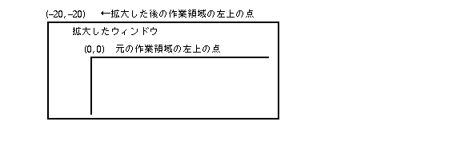
また, ウィンドウの全面モードの切り換えの場合は, 元の作業領域内のイメージの移動方法を含めて, 座標系の設定方法を指定できるようになっている.
прикладний додаток / програмаによる描画は, ウィンドウに 1 対 1 対応した描画環境を使用するが, 選択領域をドラッグした場合の«影»の描画は, ウィンドウの作業領域をはみ出て描画する必要もあるため, 以下のような特別の方法を用いる.
wsta_drg() 関数により,
ドラッグ用の描画環境を得る.
この描画環境は, 元のウィンドウの描画環境と,
以下の設定が異なっている.
wsta_drg() 関数のпараметриとしてロック指定を行なった場合は,
他のウィンドウの同時描画は禁止される.
元のウィンドウをはみ出て描画する必要がある場合は,
ロック指定を必ず行なう必要がある.
прикладний додаток / програмаは, 得られた描画環境上で,
ドラッグ影の描画を行なう.
この描画環境上では, 基本的にドラッグ影以外の描画を行なってはいけない.
ドラッグ描画のためのPDの位置を取り出すために wget_drg()
関数が用意されており,
描画環境Запис (Record)の座標系でのPDの座標位置を戻す.
この場合, 元のウィンドウをはみ出た描画を行なう必要がある場合は, 表示長方形を変更する必要がある. なお, 描画環境の各種のпараметриは変更してもよい.
ドラッグ影の描画を終了した場合は, wend_drg()
関数を実行する.
ロック指定を行なっていた場合は,
ロックは解除される.
また wend_drg() 実行後は,
wsta_drg() で得られた描画環境を使用した描画は保証されない.
wsta_drg() により得られた描画環境の座標系は,
元になったウィンドウの座標系が wscr_wnd() 関数,
または wset_wrk() 関数により相対的に移動した場合には,
自動的に座標系が一致するようにトラックされる.
即ち, 元のウィンドウのビットマップの座標系 ( bounds )
の移動量に従って, ドラッグ用の描画環境のビットマップの座標系
( bounds ),
フレーム長方形,
および表示長方形が平行移動することになる.
これによりドラッグ影の描画中に元のウィンドウの内容をスクロールしたり, 座標系を変更した場合にも, 正しいドラッグ影の描画が保証されることになる. ただし, розмір у байтах変更, 移動, および, 全面モードの切り換えに関してはトラックされない.
ウィンドウ情報Запис (Record)は, ウィンドウに関連する各種のデータを特定のシステムприкладний додаток / програмаからアクセスするために用意されており, 以下に標準的なデータを示すが, その詳細はインプリメントに依存する.
一般項目 ( WI_GENERAL = 200 )
WI_FRAMESIZE (WI_GENERAL + 0)
WI_WORKSIZE (WI_GENERAL + 1)
WI_WINLIST (WI_GENERAL + 2)
WI_FRONTLIST (WI_GENERAL + 3)
WI_MSGSTR (WI_GENERAL + 4)
WI_MENUSTR (WI_GENERAL + 5)
イネーブルウェア項目 ( WI_ENABLEWARE = 300 )
WI_TITLEFONT (WI_ENABLEWARE + 0)
WI_MENUFONT (WI_ENABLEWARE + 1)
WI_SBARWIDTH (WI_ENABLEWARE + 2)
WI_DRAGWIDTH (WI_ENABLEWARE + 3)
WI_DCLICKT (WI_ENABLEWARE + 4)
WI_DCLICKW (WI_ENABLEWARE + 5)
WI_CARETT (WI_ENABLEWARE + 6)
WI_CARETW (WI_ENABLEWARE + 7)
WI_SELECTT (WI_ENABLEWARE + 8)
WI_SELECTW (WI_ENABLEWARE + 9)
修飾項目 ( WI_ATTRIBUTE = 400 )
WI_WORKBACK (WI_ATTRIBUTE + 0)
WI_PANELBACK (WI_ATTRIBUTE + 1)
その他 ( WI_OTHER = 500 )
WI_LASTCARPOS (WI_OTHER + 0)
WI_LASTCARTIME (WI_OTHER + 1)
typedef struct SEVENT { /* 切換Подія (Event)形式 */
W type;
UW time;
PNT pos;
H cmd; /* 位置コード／コマンド */
H wid;
UW stat;
} SEVENT;
typedef struct REVENT { /* 要求Подія (Event)形式 */
W type;
RECT r; /* 対象矩形領域 (相対座標) */
H cmd;
H wid; /* 対象ウィンドウID */
W src; /* ソースPID/他 */
} REVENT;
typedef struct GEVENT { /* 一般Подія (Event)形式 */
W type;
H data[4]; /* 任意のデータ */
H cmd;
H wid;
W src;
} GEVENT;
typedef union _WEVENT {
EVENT e; /* 生Подія (Event)(核Подія (Event)) */
SEVENT s; /* 切換Подія (Event)形式 */
REVENT r; /* 要求Подія (Event)形式 */
GEVENT g; /* 一般Подія (Event)形式 */
} WEVENT;
#define EV_SWITCH 8 /* 切換Подія (Event) */ #define EV_REQUEST 9 /* 要求/応答Подія (Event) */ #define EV_MENU 10 /* メニューПодія (Event) */ #define EV_RSWITCH 16 /* 切換Подія (Event)(再表示要) */ #define EV_INACT 17 /* 入力不可状態に切換わった */ #define EV_MSG 18 /* 他のПовідомлення (Message)が得られた */ #define EV_NOMSG 19 /* Повідомлення (Message)は得られなかった */
#define W_WORK 0 /* 作業領域内 */ #define W_FRAM 1 /* ウィンドウ枠 */ #define W_PICT 2 /* ピクトグラム */ #define W_TITL 3 /* タイトル部 */ #define W_LTHD 4 /* ハンドル (左上) */ #define W_RTHD 5 /* ハンドル (右上) */ #define W_LBHD 6 /* ハンドル (左下) */ #define W_RBHD 7 /* ハンドル (右下) */ #define W_RBAR 8 /* 右スクロールバー */ #define W_BBAR 9 /* 下スクロールバー */ #define W_LBAR 10 /* 左スクロールバー */
#define W_SWITCH 128 /* 入力受付状態の移行 */ #define W_CLOSED 129 /* ウィンドウのクローズ */
#define W_REDISP 0 /* ウィンドウの再表示要求 */ #define W_PASTE 1 /* データの貼り込み要求 */ #define W_DELETE 2 /* ウィンドウのクローズ要求 */ #define W_FINISH 3 /* 処理の終了要求 */ #define W_OPENED 5 /* 子ウィンドウのオープン通知 */
#define W_ACK 0x40 /* 要求に対する ACK 応答 */ #define W_NAK 0x80 /* 要求に対する NACK 応答 */
#define CLR 0 /* 表示をクリア */ #define NOCLR 8 /* 表示をクリアしない */
#define WAIT 0 /* ウィンドウПодія (Event)待ち */ #define NOWAIT 1 /* ウィンドウПодія (Event)待たない */ #define NOMSG 0x0010 /* Повідомлення (Message)は取り出さない */ #define RAWEVT 0x0020 /* メニュー用(絶対座標) */ #define DRGEVT 0x0030 /* パーツ用 (相対座標) */
#define W_NORM 0 /* 通常モード */ #define W_FULL 1 /* 全面モード */
#define W_MOVE 0 /* 座標系を固定する(イメージを移動) */ #define W_MOVEC 1 /* 座標系を固定する(イメージを移動) */ #define W_HOLD 2 /* 座標系を移動する(イメージを固定) */
#define W_SCRL 1 /* 座標系を移動する */
#define W_VALID 1 /* スクロール表示は正当 */ #define W_NOOVL 2 /* オーバーラップ時はスクロールしない */ #define W_RDSET 4 /* 再表示領域を設定する */
typedef struct wdstat {
UW attr; /* ウィンドウの属性 */
W parent; /* 親ウィンドウID/主ウィンドウID */
W pid; /* 管理Процес (Process)ID (0:無し) */
RECT r; /* ウィンドウの表示位置 (絶対座標) */
RECT wr; /* 作業領域の位置 (相対座標) */
RECT org; /* 生成元の矩形領域 ((0,0,0,0):無し) */
} WDSTAT;
#define W_PRESS 0 #define W_QPRESS 1 #define W_CLICK 2 #define W_DCLICK 3
|
WID wopn_wnd(UW attr, UW par, RECT *r, RECT *org, W pict, TC *tit, PAT *bgpat,
WDDISP * atr)
| UW | attr | ウィンドウ属性 |
| UW | par | 主ウィンドウの場合には, 親のウィンドウIDを示し, 0 は親が存在しないことを意味する. また従属ウィンドウの場合には, 主ウィンドウ ID を示す. 主ウィンドウは同一Процес (Process)により管理されていなければならず, そうでない場合はПомилкаとなる. |
| RECT | *r | ウィンドウの外枠の領域を指定した矩形領域であり,
絶対座標で指定される.
実行後には, 実際に生成されたウィンドウの作業領域の相対座標が格納される
(左上は常に ( 0, 0 ) となっている). attr によって, WA_STD 指定時には正規座標を,
WA_WORK 指定時には作業領域座標を, WA_FRAME 指定時には外枠座標を,
指定する. |
| RECT | *org | ウィンドウの生成元の矩形領域であり, 親ウィンドウの相対座標で指定される.
存在しない場合は NULL とする. 主ウィンドウでない場合, および par = 0
の場合はこの指定は無視され,
生成元は存在しないものと見なされる. |
| W | pict | タイトルバーのピクトグラムのデータ番号を示すもので, 0 の場合はピクトグラムが存在しないことを意味する. |
| TC | *tit | タイトルバーのタイトル文字列. |
| PAT | *bgpat | 作業領域の背景パターンの指定であり, 生成されたウィンドウの作業領域は指定した背景パターンで塗り潰される.
NULL または内容が不正な場合は, デフォールトの背景パターンとなる. |
| WDDISP | *atr | ウィンドウの表示属性の指定であり, NULL または内容が不正な場合は,
デフォールトの表示属性となる.
|
指定したウィンドウ属性を持った, 通常ウィンドウまたは前面ウィンドウを新たに生成し, そのウィンドウ ID ( > 0 ) を関数値として戻す. このウィンドウ ID は以後そのウィンドウの操作の際に使用する.
生成したウィンドウは,
必ず入力受付状態となり前面に表示される.
以前に入力受付状態であったウィンドウは入力不可状態となり,
その管理Процес (Process)に対して EV_INACT が送られる.
管理Процес (Process)が自Процес (Process)であった場合は,
自分自身に対して EV_INACT が送られることになる.
ただし, 別のПроцес (Process)がパネルを表示している場合は,
パネルが削除されるのを待ってウィンドウがオープンされる.
同じПроцес (Process)がパネルを表示している場合は,
EX_WND のПомилкаとなる. アクティブПроцес (Process)のみが,
従属ウィンドウを生成することが可能であり,
そうでない場合は, EX_WPRC のПомилкаとなる.
従属ウィンドウの生成では, 入力受付状態は変化しないため,
EV_INACT は発生しない.
また, 前面ウィンドウの生成でも入力受付状態は変化しないため,
EV_INACT は発生しない.
フロントエンドПроцес (Process)のみが前面ウィンドウを生成することが可能であり,
それ以外は EX_WPRC のПомилкаとなる.
また, フロントエンドПроцес (Process)で前面ウィンドウ以外をオープンした場合も,
Помилкаとなる.
スクロールバーのあるウィンドウを生成した場合, スクロールバーの設定値を表示状況に合わせて適宜変更する必要がある.
atr
の指定は意味を持たない.
EX_ADR : адреса пам'яті(r,org,title,bgpat,atr)のアクセスは許されていない.
EX_NOSPC : システムのОперативна пам'ять (Memory)領域が不足した.
EX_WID : ウィンドウ(wid)は存在していない
(指定した親/主ウィンドウは存在していない,
主ウィンドウの管理Процес (Process)が異なる).
EX_WPRC : ウィンドウ(wid)の管理Процес (Process)でない
(従属ウィンドウの生成でアクティブПроцес (Process)でない,
フロントエンドПроцес (Process)で前面ウィンドウ以外をオープンした,
フロントエンドПроцес (Process)以外で前面ウィンドウをオープンした).
EX_WND : ウィンドウ(wid)のタイプ/状態では適用されない
(同じПроцес (Process)がパネルを表示している,
フルスクリーンのウィンドウが開かれている).
|
WID wopn_iwd(W gid)
W gid 描画環境
≧ 0 Успішне виконання(ウィンドウID) ＜ 0 Помилка(код помилки)
gid で指定した描画環境を内部ウィンドウとしてオープンし,
そのウィンドウ ID を関数値として戻す.
内部ウィンドウは, gid で指定した描画環境を 1
つのウィンドウとして割り当てたものであり,
ウィンドウ枠等の描画, 領域の管理,
入力受付状態の切換え等は一切行なわれない.
内部ウィンドウに対しては, 以下の関数のみ適用可能であり,
他はすべて EX_WND のПомилкаとなる.
また, wget_evt(), wfnd_wnd()
での位置のサーチの対象とはならない.
wcls_wnd() 内部ウィンドウのクローズ
wget_gid() 内部ウィンドウの描画環境IDの取り出し
wset_dat() 内部ウィンドウのユーザデータの設定
wget_dat() 内部ウィンドウのユーザデータの取り出し
EX_NOSPC : システムのОперативна пам'ять (Memory)領域が不足した.
EG_GID : gid で指定した描画環境は存在しない.
EX_WPRC : ウィンドウ(wid)の管理Процес (Process)でない
(フロントエンドПроцес (Process)である).
|
WID wopn_pwd(RECT *r)
RECT *r 外枠の絶対座標
*r
で指定した絶対座標の領域を外枠とするパネルウィンドウをオープンし,
そのウィンドウ ID を関数値として戻す.
パネルウィンドウは, 枠を含めた描画は一切行なわれず,
その存在の管理のみを行なうことになる.
なお, パネルウィンドウの移動 / 変形はできない.
パネルウィンドウはオープンされると入力受付状態を横取りした形で占有し,
パネルウィンドウをオープンしたПроцес (Process)がアクティブПроцес (Process)となる.
パネルウィンドウをオープンしたПроцес (Process)がアクティブПроцес (Process)でなかった場合は,
元の入力受付状態のウィンドウに対して EV_INACT
が送られ, EV_INACT が受信された後にパネルウィンドウがオープンされる.
パネルウィンドウをオープンしたПроцес (Process)が既にアクティブПроцес (Process)であった場合は,
EV_INACT は送られない.
パネルウィンドウをクローズした場合,
オープンした時に入力受付状態であったウィンドウに入力受付状態が戻り,
EV_INACT を送った場合は, EV_SWITCH ( W_SWITCH コマンド )
が送られる.
EX_ADR : адреса пам'яті(r,bgpat)のアクセスは許されていない.
EX_NOSPC : システムのОперативна пам'ять (Memory)領域が不足した.
EX_ADR : ウィンドウ(wid)の管理Процес (Process)でない
(フロントエンドПроцес (Process)である).
|
ERR wcls_wnd(W wid, W opt)
W wid ウィンドウID W opt ::= ( CLR ‖ NOCLR )
≧ 0 Успішне виконання ＜ 0 Помилка(код помилки)
wid で指定したウィンドウ,
および指定したウィンドウに従属する全ての従属ウィンドウを削除する.
削除したウィンドウに属する全てのパーツも同時に削除される.
内部ウィンドウの削除の場合を除いて,
ウィンドウに対応する描画環境も削除される.
入力受付状態の主ウィンドウを削除した場合,
親ウィンドウに対して EV_SWITCH ( W_CLOSED コマンド )
が送られ, 親ウィンドウに入力受付状態が切換わる.
この時,
生成元が存在する場合には生成元に対してクロージングアニメーションが表示される.
親ウィンドウが存在しない入力受付状態のウィンドウをクローズした場合は,
直前に入力受付状態であったウィンドウに EV_SWITCH
が送られて入力受付状態が移行する.
直前に入力受付状態であったウィンドウが既に存在しない場合は,
さらにその直前に入力受付状態であったウィンドウというように,
入力受付状態の遷移を逆にたどってウィンドウに入力受付状態が戻る.
なお,
この場合は生成元は存在しないものとみなされる.
パネルウィンドウを削除した場合は,
パネルウィンドウをオープンした時に入力受付状態であったウィンドウに入力受付状態が切換わり,
その管理Процес (Process)が異なるПроцес (Process)の場合には,
EV_SWITCH ( W_SWITCH コマンド )
が送られる ( 同一Процес (Process)の場合には, EV_SWITCH は送られない).
削除したウィンドウが, 入力受付状態でない主ウィンドウ, 従属ウィンドウ, 内部ウィンドウ, および前面ウィンドウの場合は, 入力受付状態の切換えは発生しない.
削除したウィンドウに子ウィンドウが存在する場合は, その子ウィンドウの親ウィンドウおよび生成元は, 削除したウィンドウの親ウィンドウおよび生成元にそれぞれ変更される.
削除するウィンドウは入力受付状態でなくてもよい.
削除するウィンドウの管理Процес (Process)でない場合は,
EX_WPRC のПомилкаとなる.
また, Процес (Process)が終了した場合は,
そのПроцес (Process)がオープンした全てのウィンドウは自動的に
CLR 指定でクローズされる.
EX_WID : ウィンドウ(wid)は存在していない. EX_ADR : ウィンドウ(wid)の管理Процес (Process)でない.
|
W wchg_wnd(W wid, RECT *r, W mode)
| W wid | ウィンドウID |
| RECT *r | NULL でない場合は, 切換えた新しい作業領域(相対座標) が r で指定した領域に格納される. |
W mode ::= ( W_MOVE ‖ W_MOVEC ‖ W_HOLD )
W_MOVE:
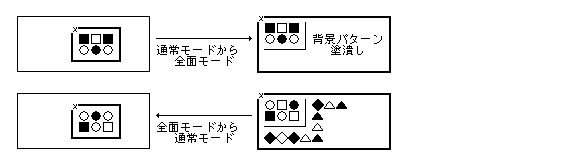
W_MOVEW_MOVEC:
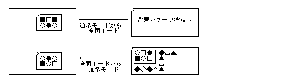
W_MOVECW_HOLD:
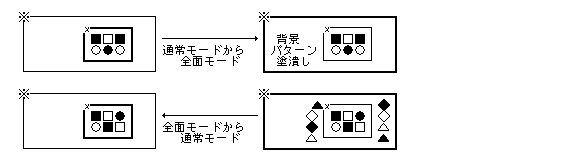
なお, 全面モードのウィンドウを移動/変形した場合は, 通常モードとなる.
≧ 0 関数値 = 0 : 通常モードに切換わった(対象ウィンドウの再表示は不要).
1 : 全面モードに切換わった(対象ウィンドウの再表示が必要).
2 : 通常モードに切換わった(対象ウィンドウの再表示が必要).
＜ 0 Помилка(код помилки)
wid で指定したウィンドウの全面モード / 通常モードを切換える.
現在通常モードの場合は全面モードに切換え,
全面モードの場合は通常モードに切換える.
全面モードから通常モードに切り換えた場合で,
他のウィンドウの再表示が必要な時は,
そのウィンドウに対して再表示要求Подія (Event)が送られる.
通常, 対象ウィンドウの再表示は不要であるが,
必要な場合もあり, その場合は再表示領域が設定されるので,
wsta_dsp() 〜 wend_dsp() により再表示を行なう必要がある.
通常モードから全面モードに切り換えた場合は,
他ウィンドウの再表示は不要であるが,
対象ウィンドウの再表示は自分で行なう必要がある.
再表示要求Подія (Event)は送られないが,
再表示領域は設定されるので, wsta_dsp() 〜 wend_dsp()
により再表示を行なう必要がある.
全面モードにした場合でもその従属ウィンドウ,
および前面ウィンドウはオーバーラップして表示されることになる.
EX_ADR : адреса пам'яті(r)のアクセスは許されていない.
EX_PAR : параметриが不正である(mode が不正).
EX_WID : ウィンドウ(wid)は存在していない.
EX_WND : ウィンドウ(wid)のタイプ/状態では適用されない
(入力受付状態の主ウィンドウでない).
EX_ADR : ウィンドウ(wid)の管理Процес (Process)でない.
|
W wmov_wnd(W wid, RECT *newr)
W wid ウィンドウID RECT *newr newr->lefttop で移動後の左上の点を指定
≧ 0 Успішне виконання 0(再表示不要)
1(再表示必要)
＜ 0 Помилка(код помилки)
wid で指定したウィンドウの外枠の左上の点が
newr->lefttop
で指定した絶対座標位置に一致するようにウィンドウ全体を移動する.
移動により作業領域の表示イメージも移動し,
最終的な新しいウィンドウの外枠が newr で指定した領域に絶対座標値で格納される.
ウィンドウ属性によって, WA_STD 指定時には正規座標が,
WA_WORK 指定時には作業領域座標が,
WA_FRAME 指定時には外枠座標が, 格納される.
移動の結果,
他ウィンドウの再表示が必要になった場合は,
再表示要求Подія (Event)が発行される.
また移動したウィンドウ自体の再表示が必要な場合は,
関数値として "1" が戻り,
不要な場合は "0" が戻る.
対象ウィンドウへの再表示要求Подія (Event)は発行されないが,
再表示領域は設定されるため,
関数値が "1" の場合は,
wsta_dsp() 〜 wend_dsp() による再表示を行なう必要がある.
移動したウィンドウが全面モードの場合は, そのウィンドウは通常モードとなる.
ウィンドウの移動では, ビットマップの境界のみが変更され, フレーム長方形, 表示長方形は一切変更されない.
対象ウィンドウが入力受付状態でない場合は,
EX_WND のПомилкаとなり,
管理Процес (Process)でない場合は, EX_WPRC
のПомилкаとなる.
EX_ADR : адреса пам'яті(newr)のアクセスは許されていない.
EX_WID : ウィンドウ(wid)は存在していない.
EX_WND : ウィンドウ(wid)のタイプ/状態では適用されない
(入力受付状態でない).
EX_ADR : ウィンドウ(wid)の管理Процес (Process)でない.
|
W wmov_drg(WEVENT *evt, RECT *newr)
WEVENT | *evt |
ドラッグ移動のきっかけとなったウィンドウПодія (Event). |
RECT | *newr |
NULL でない場合は,
移動したウィンドウの新しい外枠の絶対座標が
newr で指定した領域に格納される. ウィンドウ属性によって, WA_STD 指定時には外枠座標が,
WA_WORK 指定時には作業領域座標が,
WA_FRAME 指定時には外枠座標が, 格納される.
WA_STD 指定時に外枠座標が格納されるのは,
従来仕様との互換性のためである. |
≧ 0 Успішне виконання 0(再表示不要)
1(再表示必要)
＜ 0 Помилка(код помилки)
evt->s.wid で指定したウィンドウをドラッグにより移動する.
*evt には, ドラッグの契機となった EV_SWITCH
または EV_BUTDWN または EV_RSWITCH のウィンドウПодія (Event)を指定する.
このПодія (Event)の位置コードは, W_FRAM(1),
W_LTHD(4) 〜 W_RBHD(7) のいずれかでなくてはいけない.
Подія (Event)のタイプや, 位置コードが不正の場合は EX_PAR のПомилкаとなる.
この関数の実行により, вказівник (Pointer)の形状は«握り»となり, PD のボタンが押されている間, ウィンドウ枠の影が PD の移動に伴って移動する. ボタンをリリースした位置にウィンドウが移動し, вказівник (Pointer)の形状はもとの«移動手»に戻る.
вказівник (Pointer)をシステムПовідомлення (Message)パネル上に移動した場合は, 影は消去される. вказівник (Pointer)をシステムПовідомлення (Message)パネル以外に移動すると, 影は再び表示される. вказівник (Pointer)をシステムПовідомлення (Message)パネル上でリリースした場合は, ウィンドウの移動は取り消される.
ドラッグ中, シフトキーが押されている間は, 移動の方向が縦方向, または横方向に拘束され, ドラッグの影は, 縦方向または横方向にのみ移動する. 拘束の方向は, PD の最初の位置から最初に移動した変位の長辺の方向となる. 縦方向に拘束されている状態では, вказівник (Pointer)の形状は縦方向のものとなり, 横方向に拘束されている状態では, вказівник (Pointer)の形状は横方向のものとなる.
シフトキーを離した場合は, 拘束は解除される. 従って, シフトキーを押している状態で PD をリリースすることにより, 縦方向または横方向の移動を行なうことができる. なお, 移動の方向が拘束されている状態でも, вказівник (Pointer)自体の動きは拘束されない.
ドラッグ中に発生した EV_KEYDWN, EV_KEYUP, EV_AUTKEY
Подія (Event)は取り除かれて無視されるが,
その他のПодія (Event)が発生した場合はПодія (Event)キューに残される.
PD のリリース時により発生した EV_BUTUP Подія (Event)は取り除かれる.
移動の結果, 他ウィンドウの再表示が必要になった場合は,
再表示要求Подія (Event)が発行される.
また移動したウィンドウ自体の再表示が必要な場合は,
関数値として "1" が戻り,
不要な場合は "0" が戻る.
対象ウィンドウへの再表示要求Подія (Event)は発行されないが,
再表示領域は設定されるため,
関数値が "1" の場合は, wsta_dsp() 〜 wend_dsp()
による再表示を行なう必要がある.
移動したウィンドウが全面モードの場合は, そのウィンドウは通常モードとなる.
ウィンドウの移動では, ビットマップの境界のみが変更され, フレーム長方形, 表示長方形は一切変更されない.
対象ウィンドウが入力受付状態でない場合は,
EX_WND のПомилкаとなり,
管理Процес (Process)でない場合は,
EX_WPRC のПомилкаとなる.
EX_WID : ウィンドウ(wid)は存在していない.
EX_PAR : параметриが不正である
(Подія (Event)のタイプ, 位置コードが不正).
EX_ADR : адреса пам'ятіのアクセスは許されていない(newr).
EX_WND : ウィンドウ(wid)のタイプ/状態では適用されない
(入力受付状態でない).
EX_ADR : ウィンドウ(wid)の管理Процес (Process)でない.
|
W wrsz_wnd(W wid, RECT *newr)
W wid ウィンドウID REC *newr 変形する大きさ
≧ 0 Успішне виконання 0(再表示不要)
1(再表示必要)
＜ 0 Помилка(код помилки)
wid で指定したウィンドウの外枠を
*newr で指定した大きさに変形する.
*newr は絶対座標で指定され,
4 隅のいずれか 1 つは現在のウィンドウの外枠の 4 隅と一致していなくてはいけない.
*newr がシステムで規定した最小розмір у байтах以下の場合は,
最小розмір у байтахで実行される.
変形後のウィンドウの外枠が *newr に格納される.
ウィンドウ属性によって, WA_STD 指定時には外枠座標が,
WA_WORK 指定時には作業領域座標が,
WA_FRAME 指定時には外枠座標が,
格納される. WA_STD 指定時に外枠座標が格納されるのは,
従来仕様との互換性のためである.
変形の結果, 他ウィンドウの再表示が必要になった場合は,
再表示要求Подія (Event)が発行される.
また変形したウィンドウ自体の再表示が必要な場合は,
関数値として "1" が戻り,
不要な場合は "0" が戻る.
対象ウィンドウへの再表示要求Подія (Event)は発行されないが,
再表示領域は設定されるため,
関数値が "1" の場合は,
wsta_dsp() 〜 wend_dsp() による再表示を行なう必要がある.
変形により拡張された作業領域の追加領域はウィンドウの背景パターンで塗りつぶされる. また元の作業領域に表示されていた部分の相対座標値は一切変化しない.
変形したウィンドウが全面モードの場合は, そのウィンドウは通常モードとなる.
ウィンドウの変形では, ビットマップの境界は変更されず, フレーム長方形の 4 隅のいずれかが拡大 / 縮小されることになる. 表示長方形は一切変更されない.
対象ウィンドウが入力受付状態でない場合は,
EX_WND のПомилкаとなり,
管理Процес (Process)でない場合は, EX_WPRC のПомилкаとなる.
EX_ADR : адреса пам'яті(newr)のアクセスは許されていない.
EX_PAR : параметриが不正である
(newr の4隅が全て一致していない,*newr が範囲外).
EX_WID : ウィンドウ(wid)は存在していない.
EX_WND : ウィンドウ(wid)のタイプ/状態では適用されない
(入力受付状態でない).
EX_ADR : ウィンドウ(wid)の管理Процес (Process)でない.
|
W wrsz_drg(WEVENT *evt, RECT *limit, RECT *newr)
WEVENT | *evt |
ドラッグ変形のきっかけとなったウィンドウПодія (Event). |
RECT | *limit |
limit->lefttop はウィンドウの最小розмір у байтах ( lefttop.c.v が縦, lefttop.c.h が横の大きさ )
を示し, limit->rightbot は同様に最大розмір у байтахを示す.
limit が NULL の場合は最小розмір у байтахはシステムの規定値,
最大розмір у байтахは特に制限無しと見なされる. |
RECT | *newr |
newr が NULL でない場合は,
変形したウィンドウの新しい外枠の絶対座標が newr で指定した領域に格納される.
ウィンドウ属性によって, WA_STD 指定時には正規座標が,
WA_WORK 指定時には作業領域座標が,
WA_FRAME 指定時には外枠座標が,
格納される.
|
≧ 0 Успішне виконання 0(再表示不要)
1(再表示必要)
＜ 0 Помилка(код помилки)
evt->s.wid で指定したウィンドウをドラッグにより変形する.
*evt には,
ドラッグの契機となった EV_SWITCH, EV_BUTDWN または EV_RSWITCH のウィンドウПодія (Event)を指定する.
このПодія (Event)の位置コードは, W_LTHD(4)〜W_RBHD(7) のいずれかでなくてはいけない.
Подія (Event)のタイプや, 位置コードが不正の場合は EX_PAR のПомилкаとなる.
この関数の実行により,
вказівник (Pointer)の形状は«つまみ»となり,
PD のボタンが押されている間, ウィンドウ枠の影が PD の移動に伴って変形する.
変形のしかたは, *evt で指定したПодія (Event)の位置コード,
およびウィンドウの属性 ( WA_HHDL , WA_VHDL )
によって決まり,
さらに *limit で指定した最小розмір у байтахと最大розмір у байтахにより制限される.
ドラッグ中に最大розмір у байтах以上になった場合は, ウィンドウ枠の影は, 縦または横の最大розмір у байтахでクランプし, PD の位置に追従しなくなる. 最小розмір у байтах以下になった場合も同様にウィンドウ枠の影は, 縦または横の最小розмір у байтахでクランプし, PD の位置に追従しなくなる.
вказівник (Pointer)をシステムПовідомлення (Message)パネル上に移動した場合は, 影は消去される. вказівник (Pointer)をシステムПовідомлення (Message)パネル以外に移動すると, 影は再び表示される.
PD のボタンをリリースした時点のウィンドウ枠の影の大きさにウィンドウは変形し, вказівник (Pointer)の形状はもとの«変形手»に戻る.
вказівник (Pointer)をシステムПовідомлення (Message)パネル上でリリースした場合, ウィンドウの変形は取り消される.
ドラッグ中, シフトキーが押されている間は, 変形の方向が縦方向, または横方向に拘束され, ドラッグの影は, 縦方向または横方向にのみ変形する. 拘束の方向は, PDの最初の位置から最初に移動した変位の長辺の方向となる. 縦方向に拘束されている状態では, вказівник (Pointer)の形状は縦方向のものとなり, 横方向に拘束されている状態では, вказівник (Pointer)の形状は横方向のものとなる. ただし, 上下左右ともに変形可のウィンドウに対してのみ有効である.
シフトキーを離した場合は, 拘束は解除される. 従って, シフトキーを押している状態で PD をリリースすることにより, 縦方向または横方向の変形を行なうことができる. なお, 変形の方向が拘束されている状態でも, вказівник (Pointer)自体の動きは拘束されない.
ドラッグ中に発生した EV_KEYDWN, EV_KEYUP, EV_AUTKEY
Подія (Event)は取り除かれて無視されるが,
その他のПодія (Event)が発生した場合はПодія (Event)キューに残される.
PD のリリース時により発生した EV_BUTUP Подія (Event)は取り除かれる.
変形の結果, 他ウィンドウの再表示が必要になった場合は,
再表示要求Подія (Event)が発行される.
また変形したウィンドウ自体の再表示が必要な場合は,
関数値として "1" が戻り, 不要な場合は "0" が戻る.
対象ウィンドウへの再表示要求Подія (Event)は発行されないが, 再表示領域は設定されるため,
関数値が "1" の場合は,
wsta_dsp() 〜 wend_dsp() による再表示を行なう必要がある.
変形により拡張された作業領域の追加領域はウィンドウの背景パターンで塗りつぶされる. また元の作業領域に表示されていた部分の相対座標値は一切変化しない.
変形したウィンドウが全面モードの場合は, そのウィンドウは通常モードとなる.
ウィンドウの変形では, ビットマップの境界は変更されず, フレーム長方形の4隅のいずれかが拡大 / 縮小されることになる. 表示長方形は一切変更されない.
対象ウィンドウが入力受付状態でない場合は,
EX_WND のПомилкаとなり,
管理Процес (Process)でない場合は, EX_WPRC のПомилкаとなる.
EX_ADR : адреса пам'яті(evt,newr,limit)のアクセスは許されていない.
EX_PAR : параметриが不正である(Подія (Event)のタイプ, 位置コードが不正).
EX_WID : ウィンドウ(wid)は存在していない.
EX_WND : ウィンドウ(wid)のタイプ/状態では適用されない
(入力受付状態でない, ドラッグ変形不可).
EX_ADR : ウィンドウ(wid)の管理Процес (Process)でない.
|
W wscr_wnd(W wid, RECT *r, W dh, W dv, W mode)
W wid ウィンドウID RECT *r スクロールする矩形領域 W dh スクロールする水平距離(負の場合は左方向) W dv スクロールする垂直距離(負の場合は上方向) W mode ::= ( W_MOVE ‖ W_SCRL ) | ( W_NOOVL ) | ( W_RDSET )
W_MOVE :
W_SCRL :
-dv, 横方向に -dh 移動する).
W_NOOVL :
W_SCRL を指定した場合は座標系は移動する.
W_RDSET :
wsta_dsp() 〜 wend_dsp() により再表示が必要な領域を取り出せるようにする.
この指定を行なわない場合は, wsta_dsp() により再表示領域を取り出すことはできない.
W_NOOVL 指定で実際にイメージのスクロールが行なわれなかった場合は,
W_RDSET を指定しても再表示領域は設定されない.
W_SCRL を指定した場合の再表示領域は移動後の座標系で設定される.
≧ 0 Успішне виконання ::= ( W_VALID ) | ( W_NOOVL ) | ( W_RDSET )
W_VALID: 0=オーバーラップされて隠れていた部分がでてきた.
(スクロールしたイメージは正しくない)
1=オーバーラップされて隠れていた部分はでてきていない.
(スクロールしたイメージは正しい)
W_NOOVL: 0=スクロールした.
1=スクロールしなかった. (W_NOOVL 指定時のみ)
W_RDSET: 0=再表示領域は設定されていない.
1=再表示領域が設定された. (W_RDSET 指定時のみ)
＜ 0 Помилка(код помилки)
wid で指定したウィンドウの作業領域内の
*r で指定した矩形領域の表示内容を
dh だけ右方向 ( 負の場合は左方向 ),
dv だけ下方向 ( 負の場合は上方向 ) に移動する.
r = NULL の場合は,
作業領域全体の移動を意味する.
スクロールにより新たに表示される領域は, ウィンドウの背景パターンで塗り潰されるが, прикладний додаток / програмаが再表示を行なう必要がある. また, スクロールバーの再表示も行なう必要がある.
対象ウィンドウは入力受付状態でなくてもよい.
管理Процес (Process)でない場合は, EX_WPRC のПомилкаとなる.
EX_ADR : адреса пам'яті(r)のアクセスは許されていない. EX_PAR : параметриが不正である(modeが不正). EX_WID : ウィンドウ(wid)は存在していない. EX_WND : ウィンドウ(wid)のタイプ/状態では適用されない. EX_ADR : ウィンドウ(wid)の管理Процес (Process)でない.
|
W wsta_dsp(W wid, RECT *r, RLIST *rlst)
W wid ウィンドウID RECT *r 再表示を必要とする領域を包含する最小の矩形領域が格納される. RLIST *rlst 個々の矩形リストが格納される.
≧ 0 Успішне виконання(関数値は再表示を必要とする矩形領域の数) ＜ 0 Помилка(код помилки)
wid で指定したウィンドウの再表示処理の開始を宣言し,
再表示を必要とする領域を包含する最小の矩形領域を r
で指定した領域に, 個々の矩形リストを rlst で指定した領域に格納する.
rlst の領域はあらかじめリストになっている必要があり,
実際に設定された矩形の数が関数値として戻る.
設定される矩形はそのウィンドウの相対座標で示される.
r = NULL, rlst=NULL の場合は,
それぞれ対応するデータは格納されないが,
再表示が必要な矩形領域の数が関数値として戻る.
再表示が必要な矩形領域が存在しない場合は,
関数値として 0 が戻り, r には ( 0, 0, 0, 0) が格納され,
rlst には何も格納されない.
また, rlst の要素数が足りない場合は,
その要素数分の矩形のみが格納される.
ウィンドウの操作に伴い再表示が必要になった場合,
および再表示要求Подія (Event)を受け取った場合は,
必ず wsta_dsp() を呼び,
関数値 1 以上の時は, 再表示処理を行なわなくてはいけない.
再表示処理が終了した後は,
必ず wend_dsp() を実行しなくてはいけない.
対象ウィンドウの管理Процес (Process)でない場合は,
EX_WPRC のПомилкаとなる.
EX_ADR : адреса пам'яті(r,rlst)のアクセスは許されていない. EX_WID : ウィンドウ(wid)は存在していない. EX_WND : ウィンドウ(wid)のタイプ/状態では適用されない. EX_ADR : ウィンドウ(wid)の管理Процес (Process)でない.
|
W wend_dsp(W wid)
W wid ウィンドウID
≧ 0 Успішне виконання(関数値は再表示要求の有無(0:無, 1:有)) ＜ 0 Помилка(код помилки)
wid で指定したウィンドウの再表示処理の終了を宣言し,
ウィンドウの再表示領域をリセットする.
wsta_dsp() により再表示処理を開始した場合は,
必ず, この関数を実行する必要がある.
ただし, wsta_dsp() の関数値が 0 で,
再表示が不要な場合は,
特にこの関数を実行する必要はない.
また, wsta_dsp() による再表示処理が開始されていない場合は何も行なわない.
wend_dsp() を実行した時点で, 新たな再表示要求が発生していた場合は,
関数値として "1" が戻る.
この場合は, 再度, wsta_dsp() 〜 wend_dsp() による再表示処理を行なう必要がある.
新たな再表示要求が発生していない場合は,
関数値として"0"が戻る.
対象ウィンドウの管理Процес (Process)でない場合は,
EX_WPRC のПомилкаとなる.
EX_WID : ウィンドウ(wid)は存在していない. EX_WND : ウィンドウ(wid)のタイプ/状態では適用されない. EX_ADR : ウィンドウ(wid)の管理Процес (Process)でない.
|
W wchk_dsp(W wid)
W wid ウィンドウID
≧ 0 Успішне виконання(関数値は再表示が必要なウィンドウ数) ＜ 0 Помилка(код помилки)
wid で指定したウィンドウの再表示が必要な場合は関数値として
"1" を戻し,
不要な場合は "0" を戻す.
wid = 0 の場合は,
再表示が必要なウィンドウの個数を関数値として戻す.
EX_WID : ウィンドウ(wid)は存在していない. EX_WND : ウィンドウ(wid)のタイプ/状態では適用されない.
|
GID wsta_drg(W wid, W lock)
W wid ウィンドウID W lock lock≠0 の場合は, 他のウィンドウの同時描画を禁止する.
≧ 0 Успішне виконання(関数値はドラッグ描画用の描画環境ID) ＜ 0 Помилка(код помилки)
wid
で指定したウィンドウに対するドラッグ«影»の描画用の描画環境を生成し,
ドラッグ«影»の描画を開始する.
関数値として生成したドラッグ描画用の描画環境 ID が戻る.
lock はロック指定параметриであり, lock ≠ 0 の場合は,
他のウィンドウの同時描画は禁止される.
元のウィンドウをはみ出て描画する必要がある場合は,
ロック指定を必ず行なう必要がある.
この関数は排他的に実行され,
既に他のПроцес (Process)がドラッグ描画を実行していた場合は,
EX_DRAG のПомилкаとなる.
対象ウィンドウが入力受付状態でない場合は,
EX_WND のПомилкаとなり,
管理Процес (Process)でない場合は, EX_WPRC のПомилкаとなる.
EX_DRAG : ドラッグПомилка(既に他のПроцес (Process)が実行中である).
EX_NOSPC : システムのОперативна пам'ять (Memory)領域が不足した.
EX_WID : ウィンドウ(wid)は存在していない.
EX_WND : ウィンドウ(wid)のタイプ/状態では適用されない
(入力受付状態ではない).
EX_ADR : ウィンドウ(wid)の管理Процес (Process)でない.
|
ERR wend_drg(void)
≧ 0 Успішне виконання ＜ 0 Помилка(код помилки)
wsta_drag() により開始したドラッグ«影»の描画処理を終了し,
対応する描画環境を解放する.
ロック指定を行なっていた場合は,
他のウィンドウの同時描画の禁止は解除される.
ドラッグ描画が行なわれていなかった場合は何もしない.
ドラッグ描画を終了した場合は,
必ず wend_drg() を実行しなくてはいけない.
なお, ドラッグ描画対象のウィンドウが削除された場合,
または wsta_drg() を実行したПроцес (Process)が終了した場合は,
自動的に wend_drg() の処理が行なわれる.
EX_DRAG : ドラッグПомилка(ドラッグ描画を開始したПроцес (Process)でない).
|
W wget_drg(PNT *pos, WEVENT *evt)
PNT *pos 現在のPDの位置を, ドラッグ描画環境の相対座標値で取り出す. WEVENT *evt ドラッグのきっかけとなったウィンドウПодія (Event)
≧ 0 Успішне виконання(関数値は発生したウィンドウПодія (Event)のタイプ) ＜ 0 Помилка(код помилки)
wsta_drag() により開始したドラッグ«影»の描画処理において,
現在の PD の位置を,
ドラッグ描画環境の相対座標値で取り出し, pos で指定した領域に格納する.
EV_REQUEST, EV_SWITCH を除くウィンドウПодія (Event)が発生していた場合は,
そのПодія (Event)を取り出し, evt で指定した領域に格納して,
関数値として発生したウィンドウПодія (Event)のタイプを戻す.
この場合, 発生したПодія (Event)のタイプによっては,
PD 位置は, ウィンドウの相対座標となるため,
pos に戻される値と同一の値になるとは限らない.
EV_REQUEST, EV_SWITCH のみが発生していた場合,
またはウィンドウПодія (Event)が発生していない場合は,
関数値として 0 ( EV_NULL ) を戻し,
evt の領域には EV_NULL が格納される.
格納されるПодія (Event)の,
ウィンドウ ID, 位置コード,
および発生時刻の値は設定されず,
PD 位置とメタキー状態のみ設定され,
PD 位置は pos に戻される値と同一となる.
ドラッグ描画が開始されていない場合,
あるいは,
ドラッグ描画を開始したПроцес (Process)でない場合は,
EX_DRAG のПомилкаとなる.
EX_ADR : адреса пам'яті(pos,evt)のアクセスは許されていない.
EX_DRAG : ドラッグПомилка(ドラッグ描画を開始したПроцес (Process)でない,
ドラッグ描画は開始されてない).
|
W wget_evt(WEVENT *evt, W mode)
WVENT *evt 取り出されたウィンドウПодія (Event)
W mode ::= ( WAIT ‖ NOMSG ‖ RAWEVT ‖ DRGEVT ) | [ NOWAIT ]
WAIT 0x0000 Подія (Event)発生まで待つ
NOWAIT 0x0001 Подія (Event)が発生していなくても即座にリターン
NOMSG 0x0010 Повідомлення (Message)は取り出さない
RAWEVT 0x0020 絶対座標でПодія (Event)を取り出す
DRGEVT 0x0030 相対座標でПодія (Event)を取り出す
≧ 0 Успішне виконання(関数値はウィンドウПодія (Event)のタイプ) ＜ 0 Помилка(код помилки)
ウィンドウПодія (Event)を取り出し,
evt で指定した領域に格納する.
関数値として取り出したПодія (Event)のタイプを戻す.
mode により以下のように振る舞う.
WAIT :
PD のプレスが入力受付状態でないウィンドウで発生した場合は,
EV_SWITCH を発生し, 入力受付状態の切り換えを行なう. EV_NULL 〜 EV_RSV, EV_MENU, EV_APPL4〜8:
EV_SWITCH, EV_RSWITCH, EV_INACT:
EV_REQUEST :
wpas_evt() がまだ実行されていない場合は,
( 空 ) Подія (Event)をアクティブПроцес (Process)に戻す ( wpas_evt(NULL) の処理 ).
待ち状態に入り, アクティブПроцес (Process),
または直前のフロントエンドПроцес (Process)から渡されるПодія (Event)を待つ.
Подія (Event)が渡されたら,
そのПодія (Event)を得られたПодія (Event)としてリターンする ( ( 空 ) Подія (Event)が得られることはない ).
NOWAIT : ( WAIT|NOWAIT としても同じ )WAIT 指定に対して, 以下の点が異なる.
EV_NULL が返る.
EV_NOMSG が返る.
NOMSG :
EV_SWITCH を発生せず, EV_BUTDWN として戻す
( 入力受付状態の切換は行なわない ) .
W_REDISP 以外の EV_REQUEST 及び,
EV_MSG は取り出さない. WAIT 指定と同じ処理を行なう.
WAIT 指定の場合と同じ.
NOMSG|NOWAIT :
NOMSG 指定に対して, 以下の点が異なる.
EV_NULL が返る.
EV_NOMSG が返る.
RAWEVT :
EV_BUTDWN, EV_BUTUP,
EV_KEYDWN, EV_KEYUP,
EV_AUTKEY のいずれかのПодія (Event)が発生するまで待って,
そのПодія (Event)をとりだし, その座標は絶対座標のままとする.
wid は常に 0 となる.
PD のプレスが入力受付状態でないウィンドウで発生した場合でも,
EV_SWITCH を発生せず,
EV_BUTDWN として戻す ( 入力受付状態の切換は行なわない ).
EV_NOMSG を関数値として戻す.
RAWEVT|NOWAIT :
RAWEVT 指定に対して, 以下の点が異なる.
EV_NULL が返る.
DRGEVT :
RAWEVT と同じ. NOMSG および RAWEVT, DRGEVT指定はパネル,
メニュー, パーツ等の内部処理に使用され, 通常のприкладний додаток / програмаでは使用しない.
DRGEVT|NOWAIT :
DRGEVT 指定に対して, 以下の点が異なる.
EV_NULL が返る.
WAIT, NOMSG, RAWEVT, DRGEVT
を単独で指定した場合,
Подія (Event)がまったく発生していない場合には,
Подія (Event)が発生するかまたは表示の更新が必要になるまで待つ
(カレットの点滅等が必要な場合は, EV_NULLが発生する).
一方, WAIT, NOMSG, RAWEVT, DRGEVTをNOWAITとともに指定した場合は,
Подія (Event)がまったく発生していない場合でも EV_NULL
( アクティブПроцес (Process)の場合 ) または EV_NOMSG ( 非アクティブПроцес (Process)の場合 ) が返り,
待つことはない.
NOWAIT指定は,
フロントエンドПроцес (Process)では無視される.
フロントエンドПроцес (Process)でなく mode が WAIT
の場合には, 内部Подія (Event)Повідомлення (Message) ( ウィンドウПодія (Event) ) を取り出すが,
この場合,
内部Подія (Event)Повідомлення (Message)以外のすべてのタイプのПовідомлення (Message)もチェックされ,
内部Подія (Event)Повідомлення (Message)以外のПовідомлення (Message)を受信していた場合には,
関数値として EV_MSG が戻り,
evt で指定した領域には
type の後にПовідомлення (Message)の先頭 8 バイト
( タイプとрозмір у байтах ) が格納される.
EX_ADR : адреса пам'яті(evt)のアクセスは許されていない.
EX_ADR : ウィンドウ(wid)の管理Процес (Process)でない
(ウィンドウが1つも存在しない).
|
ERR wugt_evt(WEVENT *evt)
WEVENT *evt ウィンドウПодія (Event)
≧ 0 Успішне виконання ＜ 0 Помилка(код помилки)
*evt に格納されているウィンドウПодія (Event)を戻して,
次に WAIT または lNOWAIT のモードで実行される,
wget_evt() 関数で取り出すウィンドウПодія (Event)とする.
他のモードで実行した場合は取り出されない.
戻したПодія (Event)は, 通常のПодія (Event)に優先して取り出される. また, 取り出される順番は戻した順番である. Подія (Event)の内容については一切チェックされない.
1 Процес (Process)で最大16個のウィンドウПодія (Event)をПодія (Event)キューに戻すことができる.
同時に使用できるПроцес (Process)はウィンドウ数個までであり,
それ以上はПомилка ( EX_NOSPC ) となる.
wugt_evt() で戻したПодія (Event)が, wget_evt() で取り出された場合,
フロントエンドПроцес (Process)には渡されない.
この処理は1つのПроцес (Process)内で行なわれるため,
戻したПодія (Event)は, 他のПроцес (Process)からの wget_evt()
では取り出されない点に注意が必要である.
Процес (Process)が終了した場合は, そのПроцес (Process)によって戻されたПодія (Event)は自動的に捨てられる.
この関数は, パーツやパネルの処理で期待外のПодія (Event)が得られた場合,
そのПодія (Event)を一旦戻して,
通常のПодія (Event)ループに戻った後,
wget_evt() で取り出して処理するために使用される.
wugt_evt() は,
特殊な用途に使用される関数であり,
通常прикладний додаток / програмаは使用しない.
EX_ADR : адреса пам'яті(evt)のアクセスは許されていない.
EX_NOSPC : システムのОперативна пам'ять (Memory)領域が不足した
(戻したПодія (Event)が16個以上).
|
ERR wpas_evt(WEVENT *evt)
WEVENT *evt ウィンドウПодія (Event)
≧ 0 Успішне виконання ＜ 0 Помилка(код помилки)
*evt で指定したフロントエンド処理後のウィンドウПодія (Event)を次のフロントエンドПроцес (Process)または,
アクティブПроцес (Process)に戻す.
evt = NULL の場合は,
戻すべきПодія (Event)が ( 空 ) であることを意味し,
次のフロントエンドПроцес (Process)が存在していても,
必ずアクティブПроцес (Process)に ( 空 ) Подія (Event)を戻す.
Подія (Event)のタイプは 0 〜 15 でなくてはならないが, その内容は一切チェックされない.
この関数は, フロントエンドПроцес (Process)のみが, 実行可能である.
EX_ADR : адреса пам'яті(evt)のアクセスは許されていない.
EX_PAR : параметриが不正である(Подія (Event)タイプが0〜15以外).
EX_ADR : ウィンドウ(wid)の管理Процес (Process)でない
(プロントエンドПроцес (Process)でない).
|
ERR wswi_wnd(W wid, WEVENT *evt)
W wid ウィンドウID WEVENT *evt ウィンドウПодія (Event)
≧ 0 Успішне виконання ＜ 0 Помилка(код помилки)
wid で指定したウィンドウに
EV_SWITCH を送信して入力受付状態に切り換える.
evt = NULL の場合は,
EV_SWITCH Подія (Event)の W_SWITCH
コマンドが wid で指定したウィンドウに対して送られる.
evt ≠ NULL の場合は,
*evt で指定した EV_BUTDWN
Подія (Event)を EV_SWITCH に変換して,
wid で指定したウィンドウに対して送られる.
evt->type ≠ EV_BUTDWN または,
evt->wid ≠ wid
の時は EX_PAR のПомилкаとなる.
現在入力受付状態であったウィンドウは入力不可状態となり,
続くウィンドウПодія (Event)の取り出しでは,
EV_INACT が得られることになる.
アクティブПроцес (Process)でない場合,
または指定したウィンドウが既に入力受付状態の場合は,
EX_WND のПомилкаとなる.
EX_ADR : адреса пам'яті(evt)のアクセスは許されていない.
EX_PAR : параметриが不正である(Подія (Event)のタイプが不正).
EX_WID : ウィンドウ(wid)は存在していない.
EX_WND : ウィンドウ(wid)のタイプ/状態では適用されない
(アクティブПроцес (Process)でない, 既に入力受付状態である).
|
W wsnd_evt(WEVENT *evt)
WEVENT *evt 要求Подія (Event)
≧ 0 Успішне виконання(関数値は送付した要求Подія (Event)の数) ＜ 0 Помилка(код помилки)
evt で指定した要求Подія (Event)を
evt->r.wid で指定したウィンドウに対して送付する.
evt->r.type は EV_REQUEST
でなくてはいけない.
また evt->r.cmd は W_REDISP
であってはいけない.
送信時に evt->r.src に送信元のПроцес (Process) ID
が設定される.
送付先のウィンドウ ID = 0 の場合は,
すべてのウィンドウ ( 内部ウィンドウ, パネルウィンドウを除く )
に対して要求Подія (Event)が送付される.
ウィンドウ ID < 0 の場合は,
- widをПроцес (Process) ID として,
指定したПроцес (Process)に対し要求Подія (Event)を送付する.
関数値として, 要求Подія (Event)を送付したウィンドウの数を戻す. 従って, wid =0以外の場合は常に関数値は"1"となる.
ウィンドウ間のデータの貼り込みは, wsnd_evt() により W_PASTE Подія (Event)を送付して行なわれる.
EX_ADR : адреса пам'яті(evt)のアクセスは許されていない. EX_PAR : параметриが不正である(Подія (Event)のタイプ, 内容が不正). EX_WID : ウィンドウ(wid)は存在していない. EX_WND : ウィンドウ(wid)のタイプ/状態では適用されない.
|
ERR wrsp_evt(WEVENT *evt, W nak)
WEVENT *evt 要求Подія (Event)
≧ 0 Успішне виконання ＜ 0 Помилка(код помилки)
evt で指定した要求Подія (Event)に対する応答を evt->r.src
で指定したПроцес (Process)に送信する.
evt->r.type は EV_REQUEST でなくてはいけない.
また evt->r.cmd は W_REDISP であってはいけない.
nak = 0 の時は, ACK レスポンスとして evt->r.cmd
に W_ACK が + されるが, nak ≠ 0 の場合は, NACK レスポンスとして
evt->r.cmd に W_NAK が + される.
EX_ADR : адреса пам'яті(evt)のアクセスは許されていない. EX_PAR : параметриが不正である(Подія (Event)のタイプが不正, 応答先PIDが不正).
|
W wwai_rsp(WEVENT *evt, W cmd, UW tmout)
WEVENT *evt ウィンドウПодія (Event)
W cmd 要求コマンド. W_REDISP であってはいけない.
UW tmout 応答待ちのタイムアウトを msec 単位で指定するものであり,
=0の場合は, タイムアウト無しを意味する.
≧ 0 Успішне виконання(関数値は(W_ACK/W_NAK/0)) ＜ 0 Помилка(код помилки)
cmd で指定した要求Подія (Event)に対する ACK 応答,
または NAK 応答を待ち,
得られた応答Подія (Event)を evt で指定した領域に格納する.
evt = NULL の場合は,
得られた応答Подія (Event)は格納されない.
関数値として, ACK 応答が得られた場合は W_ACK,
NAK 応答が得られた場合は W_NAK,
タイムアウトとなった場合は0が戻る.
EX_ADR : адреса пам'яті(evt)のアクセスは許されていない. EX_PAR : параметриが不正である(cmdが不正).
|
ERR wreq_dsp(W wid)
W wid ウィンドウID
≧ 0 Успішне виконання ＜ 0 Помилка(код помилки)
wid
で指定したウィンドウの再表示領域を作業領域全体とし,
再表示要求Подія (Event)を送る. ウィンドウの枠部分も再表示される.
wid = 0 の場合は,
すべてのウィンドウ(内部ウィンドウを除く)に対して再表示要求を行ない,
これは, 画面全体を書き直す場合に使用される.
|
W wfnd_wnd(PNT *gpos, PNT *lpos, W *wid)
PNT *gpos 絶対座標の点. PNT *lpos 相対座標位置が格納される. W *wid ウィンドウIDが格納される.
≧ 0 Успішне виконання(位置コード)
W_WORK (0) -- 作業領域内
W_FRAM (1) -- ウィンドウ枠
W_PICT (2) -- ピクトグラム (*)
W_TITL (3) -- タイトル文字列 (*)
W_LTHD (4) -- ハンドル (左上)(*)
W_RTHD (5) -- ハンドル (右上) (*)
W_LBHD (6) -- ハンドル (左下) (*)
W_RBHD (7) -- ハンドル (右下) (*)
W_RBAR (8) -- 右スクロールバー (*)
W_BBAR (9) -- 下スクロールバー (*)
W_LBAR (10) -- 左スクロールバー (*)
(*) 対応する部分が存在しないウィンドウの場合は, すべてW_FRAM となる.
＜ 0 Помилка(код помилки)
gpos で指定した絶対座標の点が,
どのウィンドウのどの位置であるかを見付け, wid で指定した領域に対応するウィンドウIDを,
lpos で指定した領域に,
そのウィンドウでの相対座標位置を格納する.
関数値として以下の位置コードを戻す.
lpos = NULL の場合は, 相対座標位置は格納されない.
指定した点がウィンドウにも属していない場合は wid には 0,
lpos には指定した gpos そのものが格納され,
関数値は0が戻る.
パネルウィンドウもサーチの対象となり,
パネルウィンドウの領域の位置コードは
W_WORK となる.
EX_ADR : адреса пам'яті(gpos,lpos,wid)のアクセスは許されていない.
|
WID wget_act(W *pid)
W *pid Процес (Process)IDが格納される
≧ 0 Успішне виконання(関数値は入力受付状態のウィンドウID) ＜ 0 Помилка(код помилки)
現在,
入力受付状態である主ウィンドウのウィンドウ ID を関数値として戻す.
pid が NULL でない場合は,
その管理Процес (Process), 即ちアクティブПроцес (Process)のПроцес (Process) ID を pid
で指定した領域に格納する.
自Процес (Process)が管理Процес (Process)の場合は *pid には 0 が格納される.
パネルウィンドウも対象となるため, パネルウィンドウが存在する場合は, 必ず, パネルウィンドウのIDが戻ることになる.
EX_ADR : адреса пам'яті(pid)のアクセスは許されていない. EX_ADR : 入力受付状態のウィンドウがない, 又は確定していない.
|
W wget_tit(W wid, W *pict, TC *title)
W wid ウィンドウID W *pict ピクトグラムのデータ番号が格納される TC *title タイトル文字列が格納される
≧ 0 Успішне виконання(関数値は虚身ウィンドウ状態(1:虚身ウィンドウ,0:Успішне виконання)) ＜ 0 Помилка(код помилки)
wid で指定したウィンドウのピクトグラムのデータ番号,
タイトル文字列を取り出し, それぞれ, pict, title で指定した領域に格納する.
title としては 96 + 1 文字分の領域を確保しておく必要がある.
関数値として,
虚身ウィンドウの場合は "1", そうでない場合は"0"が戻る.
title = NULL または pict = NULL の場合は対応するデータは格納されない.
EX_ADR : адреса пам'яті(pict,title)のアクセスは許されていない. EX_WID : ウィンドウ(wid)は存在していない. EX_WND : ウィンドウ(wid)のタイプ/状態では適用されない.
|
ERR wset_tit(W wid, W pict, TC *title, W mode)
W wid ウィンドウID W pict ピクトグラムのデータ番号 TC *title タイトル文字列 W mode !=0 の場合は虚身ウィンドウ
≧ 0 Успішне виконання ＜ 0 Помилка(код помилки)
wid で指定したウィンドウのピクトグラムを pict で指定したデータ番号に,
タイトル文字列を title で指定した文字列に変更して, 再表示を行なう.
mode = 0 の場合は,
通常の表示を行ない, ≠ 0 の場合は,
虚身ウィンドウとして表示する.
pict < 0 の場合は,
ピクトグラムの変更なし, title = NULL の場合はタイトル文字列の変更なしを意味する.
EX_ADR : адреса пам'яті(title)のアクセスは許されていない. EX_WID : ウィンドウ(wid)は存在していない. EX_WND : ウィンドウ(wid)のタイプ/状態では適用されない.
|
W wget_sts(W wid, WDSTAT *stat, WDDISP *atr)
W wid ウィンドウID WDSTAT *stat ウィンドウ状態 WDDISP *atr 表示属性
≧ 0 Успішне виконання(関数値は入力受付状態(1:入力受付状態, 0:入力不可状態)) ＜ 0 Помилка(код помилки)
wid で指定したウィンドウの現在の状態,
および表示属性を取り出し, それぞれ stat, atr
で指定した領域に格納する.
関数値として指定したウィンドウが入力受付状態の時は 1,
入力不可状態の時は 0 を戻す.
stat または atr が NULL
の場合は, 対応するデータは格納されない.
全面モードの場合に stat->attr に WA_FULL がセットされる.
また stat->attr によって,
WA_STD 指定時には正規座標が,
WA_WORK 指定時には作業領域座標が,
WA_FRAME 指定時には外枠座標が,
stat->r に格納される.
EX_ADR : адреса пам'яті(stat,atr)のアクセスは許されていない. EX_WID : ウィンドウ(wid)は存在していない. EX_WND : ウィンドウ(wid)のタイプ/状態では適用されない.
|
GID wget_gid(W wid)
W wid ウィンドウID
≧ 0 Успішне виконання(関数値は描画環境ID) ＜ 0 Помилка(код помилки)
wid で指定したウィンドウの描画環境 ID
を関数値として戻す.
EX_WID : ウィンドウ(wid)は存在していない.
|
ERR wset_bgp(W wid, PAT *pat)
W wid ウィンドウID PAT *pat 設定する背景パターン
≧ 0 Успішне виконання ＜ 0 Помилка(код помилки)
wid で指定したウィンドウの背景パターンを,
pat で指定したパターンに設定する.
設定するパターンは,
その時点のウィンドウの描画環境のパターンрозмір у байтахに合ったものと見なされる.
EX_ADR : адреса пам'яті(pat)のアクセスは許されていない. EX_NOSPC : システムのОперативна пам'ять (Memory)領域が不足した. EX_PAR : параметриが不正である(pat の内容が不正). EX_WID : ウィンドウ(wid)は存在していない. EX_WND : ウィンドウ(wid)のタイプ/状態では適用されない.
|
W wget_bgp(W wid, PAT *pat, W size)
W wid ウィンドウID PAT *pat 取り出す背景パターン格納場所 W size pat の領域розмір у байтах
≧ 0 Успішне виконання(関数値は背景パターンのрозмір у байтах) ＜ 0 Помилка(код помилки)
wid で指定したウィンドウの背景パターンを,
pat で指定した領域に格納する.
size は pat で指定した領域のバイトрозмір у байтахであり,
この領域が小さくて背景パターンを格納できない場合は,
EX_PAR のПомилкаとなる. 関数値として,
実際に格納した背景パターンのрозмір у байтах ( バイト数 ) が戻る.
pat = NULL の場合は,
背景パターンの格納は行なわずに格納に必要なрозмір у байтахが関数値として戻る.
EX_ADR : адреса пам'яті(pat)のアクセスは許されていない. EX_PAR : параметриが不正である(sizeが小さすぎる). EX_WID : ウィンドウ(wid)は存在していない. EX_WND : ウィンドウ(wid)のタイプ/状態では適用されない.
|
ERR wera_wnd(W wid, RECT *r)
W wid ウィンドウID RECT *r 矩形領域
≧ 0 Успішне виконання ＜ 0 Помилка(код помилки)
wid で指定したウィンドウの *r
で指定した矩形領域をウィンドウの背景パターンで塗り潰す.
r=NULL の場合は,
ウィンドウの作業領域全体を背景パターンで塗り潰す.
EX_ADR : адреса пам'яті(r)のアクセスは許されていない. EX_WID : ウィンドウ(wid)は存在していない. EX_WND : ウィンドウ(wid)のタイプ/状態では適用されない.
|
ERR wchg_dsp(WDDISP *atr, PAT *bgpat)
WDDISP *atr 表示属性 PAT *bgpat 背景パターン
≧ 0 Успішне виконання ＜ 0 Помилка(код помилки)
ウィンドウのデフォールト表示属性を atr で指定した内容に変更し,
デフォールトの背景パターンを bgpat で指定した内容に変更する.
atr = NULL,
または bgpat = NULL の場合はそれぞれ対応する属性を変更しないことを意味する.
EX_ADR : адреса пам'яті(atr, bgpat)のアクセスは許されていない. EX_PAR : параметриが不正である.
|
ERR wget_bar(W wid, W *rbar, W *bbar, W *lbar)
W wid ウィンドウID W *rbar 右スクロールバーのパーツIDの格納場所 W *bbar 下スクロールバーのパーツIDの格納場所 W *lbar 左スクロールバーのパーツIDの格納場所
≧ 0 Успішне виконання ＜ 0 Помилка(код помилки)
wid で指定したウィンドウに付属する 3
種類のスクロールバーのパーツIDを取り出して,
rbar, bbar, lbar
で指定した領域にそれぞれ格納する.
rbar, bbar, lbar
がそれぞれ NULL の場合は対応するパーツIDは格納されない.
ウィンドウにスクロールバーが存在する場合は, この関数により, そのパーツIDを取り出して, スクロールバーの設定値を表示状況に合わせて適宜変更する必要がある.
EX_ADR : адреса пам'яті(rbar,bbar,lbar)のアクセスは許されていない. EX_WID : ウィンドウ(wid)は存在していない. EX_WND : ウィンドウ(wid)のタイプ/状態では適用されない.
|
ERR wget_dat(W wid, W *dat)
W wid ウィンドウID W *dat ユーザデータの格納場所
≧ 0 Успішне виконання ＜ 0 Помилка(код помилки)
wid で指定したウィンドウのユーザデータを取り出し,
dat で指定した領域に格納する.
ユーザデータはウィンドウの管理情報の一部としてアプケーションが任意に使用することができる1つの W データである.
EX_ADR : адреса пам'яті(dat)のアクセスは許されていない. EX_WID : ウィンドウ(wid)は存在していない.
|
ERR wset_dat(W wid, W dat)
W wid ウィンドウID W dat ユーザデータ
≧ 0 Успішне виконання ＜ 0 Помилка(код помилки)
wid で指定したウィンドウのユーザデータを
dat の値に設定する.
ユーザデータはウィンドウの管理情報の一部としてアプケーションが任意に使用することができる1つの W データである.
EX_WID : ウィンドウ(wid)は存在していない.
|
ERR wget_wrk(W wid, RECT *r)
W wid ウィンドウID RECT *r 作業領域の格納場所
≧ 0 Успішне виконання ＜ 0 Помилка(код помилки)
wid で指定したウィンドウの作業領域の相対座標値を取り出し,
r で指定した領域に格納する.
EX_ADR : адреса пам'яті(r)のアクセスは許されていない. EX_WID : ウィンドウ(wid)は存在していない. EX_WND : ウィンドウ(wid)のタイプ/状態では適用されない.
|
ERR wset_wrk(W wid, RECT *r)
W wid ウィンドウID RECT *r 作業領域矩形
≧ 0 Успішне виконання ＜ 0 Помилка(код помилки)
wid で指定したウィンドウの作業領域の左上の点の相対座標を,
r で指定した矩形の左上の点の座標値と一致するように変更し,
変更後の作業領域の相対座標値を r で指定した領域に格納する.
即ち, r->lefttop はそのままで,
r->rightbot のみが設定される.
作業領域座標の変更により, 対応する描画環境のビットマップ境界, フレーム長方形, および表示長方形の座標値が指定した位置になるように移動する.
ウィンドウの作業領域の表示は一切変化しない.
EX_ADR : адреса пам'яті(r)のアクセスは許されていない. EX_WID : ウィンドウ(wid)は存在していない. EX_WND : ウィンドウ(wid)のタイプ/状態では適用されない.
|
ERR wget_org(W wid, W *parent, RECT *org)
W wid ウィンドウID W *parent 親ウィンドウIDの格納場所 RECT *org 生成元矩形の格納場所
≧ 0 Успішне виконання ＜ 0 Помилка(код помилки)
wid で指定したウィンドウの親ウィンドウ ID,
生成元と取り出し, それぞれ parent, org
で指定した領域に格納する.
生成元は, 親ウィンドウの相対座標で表わされる.
主ウィンドウ以外の場合はПомилкаとなる.
EX_ADR : адреса пам'ятіのアクセスは許されていない.
EX_WID : ウィンドウ(wid)は存在していない.
EX_WND : ウィンドウ(wid)のタイプ/状態では適用されない
(主ウィンドウでない).
|
ERR wset_org(W wid, W parent, RECT *org)
W wid ウィンドウID W parent 親ウィンドウID RECT *org 生成元矩形
≧ 0 Успішне виконання ＜ 0 Помилка(код помилки)
wid で指定したウィンドウの親ウィンドウ ID を,
parent の値に, 生成元を, *org の値に設定する.
parent < 0 の場合には, parent の変更なし,
org = NULL の場合は, 生成元の変更なしを意味する.
生成元は, 親ウィンドウの相対座標で設定する. parent = 0
または parent = wid の場合は
org の値に無関係に,
生成元を無くすことを意味する.
主ウィンドウ以外の場合はПомилкаとなる.
EX_ADR : адреса пам'яті(org)のアクセスは許されていない.
EX_WID : ウィンドウ(wid)は存在していない.
EX_WND : ウィンドウ(wid)のタイプ/状態では適用されない
(主ウィンドウでない).
|
W wlst_wnd(W wid, W size, W *wids)
W wid ウィンドウID W size wids が示す領域のワード数 W *wids wid 格納領域
≧ 0 Успішне виконання ＜ 0 Помилка(код помилки)
wid で指定したウィンドウの子ウィンドウのウィンドウ ID を取り出して,
wids で指定した領域に格納する. wid = 0 の場合は,
現在存在しているすべてのウィンドウを, wid < 0 の場合は,
-wid で指定した値をПроцес (Process) ID として,
そのПроцес (Process)の管理するウィンドウのウィンドウ ID を取り出す.
wids は size で示されるワード数の配列領域である.
関数値として存在するウィンドウの個数が戻る.
取り出されるウィンドウ ID には, 内部ウィンドウ, パネルウィンドウも含まれる.
ウィンドウの個数よりも size が小さい場合は, size 個のウィンドウ ID のみが格納される.
size ≦ 0 の場合または, wids = NULL の場合は,
単に存在するウィンドウの数が戻るだけとなる.
EX_ADR : адреса пам'яті(wids)のアクセスは許されていない.
|
ERR wget_dmn(TC **dmenu)
TC **dmenu 表示管理メニューの格納領域
≧ 0 Успішне виконання ＜ 0 Помилка(код помилки)
dmenuで指定した領域に«表示管理メニュー»項目リストへのвказівник (Pointer)を設定する.
実際の項目リストは共有Оперативна пам'ять (Memory)領域に作成され,
そのвказівник (Pointer)が dmenu に設定される.
不能項目フラグ, 選択フラグ等もその時点の«表示管理メニュー»の状態に合わせて設定される.
共有Оперативна пам'ять (Memory)領域に作成されたメニュー項目は, 次に wget_dmn() が実行されるまで存在が保証される.
EX_ADR : адреса пам'яті(dmenu)のアクセスは許されていない.
|
W wexe_dmn(W item)
W item メニュー項目番号
≧ 0 Успішне виконання(関数値は切り換えた先のウィンドウID/0) ＜ 0 Помилка(код помилки)
wget_dmn() で得られた,
«表示管理メニュー»の item で指定した項目を実行する.
item の上位バイトは無視され,
下位バイトが 1 〜 の項目番号を示す.
項目番号が不正の場合は EX_PAR のПомилкаとなる.
関数値として, 入力受付状態のウィンドウが切り換わった場合は, 切り換えた先のウィンドウ ID が戻り, 切り換わらない場合は, 0 が戻る.
EX_PAR : параметриが不正である(item). EX_WPRC : アクティブПроцес (Process)でない.
|
ERR wdef_fep(W onoff)
W onoff フロントエンドПроцес (Process)のオン/オフ
≧ 0 Успішне виконання ＜ 0 Помилка(код помилки)
自Процес (Process)をフロントエンドПроцес (Process)として登録,
またはフロントエンドПроцес (Process)としての登録を解消する.
onoff > 0 の場合は一般フロントエンドПроцес (Process)として,
onoff < 0 の場合は特殊フロントエンドПроцес (Process)として登録,
onoff = 0 の場合は解消となる.
登録していない状態で,
解消しようとした場合は, 何も行なわれない.
フロントエンドПроцес (Process)は最大 4 つまで同時に登録可能であり, 登録した逆順にПодія (Event)が渡されてシーケンシャルに処理されいく.
フロントエンドПроцес (Process)は終了すると, 自動的にフロントエンドПроцес (Process)としての登録は解消される.
EX_LIMIT : システムの制限を超えた
(既に最大個数のフロントエンドПроцес (Process)が登録されている).
EX_WPRC : ウィンドウ(wid)の管理Процес (Process)でない
(通常ウィンドウを開いたまま登録した,
前面ウィンドウを開いたまま登録解消した).
|
W wchk_dck(UW first)
UW first 最初のPDのプレスで得られたПодія (Event)の発生時刻(time)
≧ 0 Успішне виконання(関数値はPD操作タイプ) ＜ 0 Помилка(код помилки)
PD の操作がダブルクリック操作か否かをチェックし, その結果を関数値として戻す.
関数値として以下のいずれかの値が戻る.
W_PRESS : プレス操作 :
W_QPRESS : クイックプレス操作 :
W_CLICK : クリック操作 :
W_DCLICK : ダブルクリック操作 :
EX_WPRC : ウィンドウ(wid)の管理Процес (Process)でない
(アクティブПроцес (Process)でない).
|
W wchg_dck(W time)
W time ダブルクリック間隔(秒単位)
≧ 0 Успішне виконання(変更以前のダブルクリック間隔) ＜ 0 Помилка(код помилки)
wchk_dck() で使用するダブルクリック間隔を time で指定した値に変更し,
変更以前の値を関数値として取り出す.
time ≦ 0 の場合は変更せずに現在値を取り出す.
なお, システムスタートアップ時にはダブルクリック間隔として適当なデフォールト値が設定されているものとする.
発生しない.
|
ERR wchg_ful(void)
なし
≧ 0 Успішне виконання ＜ 0 Помилка(код помилки)
この関数を実行した後, 同一Процес (Process)から最初に開かれた主ウィンドウが, 自動的にフルスクリーンモードとなり, システムПовідомлення (Message)パネル領域を含めた全画面に表示される. システムПовідомлення (Message)パネルは隠れて見えなくなる.
フルスクリーンモードで開くことの出来るのは, 主ウィンドウのみである.
開かれたウィンドウの属性は, 変形不可, 枠, タイトルバー, スクロールバーなしとなる. 指定した表示位置は無視され, 画面全体が作業領域となり, 移動, 拡大, 縮小は出来ない.
フルスクリーンモードのウィンドウが開いている間は, 同一Процес (Process)からも, 別の主ウィンドウを開くことは出来ない. フルスクリーンウィンドウの従属ウィンドウ及び, パネルは開くことが出来る. また, フルスクリーンモードのウィンドウから, 他のウィンドウへ入力受付状態を移すことは出来ない.
ウィンドウが閉じるかПроцес (Process)が終了すると, 自動的にフルスクリーンモードは解除される.
フルスクリーンモードで, 下記の関数を実行した場合, Помилкаとなる場合がある.
wopn_wnd()
EX_WND : フルスクリーンモードのウィンドウが開かれている.
(別の主ウィンドウを開こうとした場合)
wswi_wnd()
EX_WND : フルスクリーンモードのウィンドウが開かれている.
wexe_dmn()
EX_PAR : フルスクリーンモードのウィンドウが開かれている.
(フルスクリーンモードでは, 表示管理メニューの項目は,
全て不能状態になる)
wmov_wnd(), wmov_drg(), wrsz_wnd(), wrsz_drg(), wchg_wnd()
EX_WND : ウィンドウのタイプ/状態では実行出来ない.
(フルスクリーンモードのウィンドウに対して実行した場合)
ウィンドウ属性に WA_SFULL を指定することでフルスクリーンウィンドウを開く.
また, WA_SFULL によるフルスクリーンウィンドウは複数開くことができるが,
wchg_ful によるフルスクリーンウィンドウは 1 つしか開くことができない.
EX_LIMIT : システムの制限を超えた(既に別のПроцес (Process)が実行中).
|
ERR wcnv_rec(UW attr, RECT *r, UW opt)
UW attr 変換元の属性 RECT *r 枠座標へのвказівник (Pointer) UW opt 変換先の枠座標指定
≧ 0 Успішне виконання ＜ 0 Помилка(код помилки)
attr のウィンドウ属性を持った,
r で示されるウィンドウ枠を, opt
で指定した枠座標に変換する. 結果は r に直接戻される.
opt には, WA_STD, WA_WORK, WA_FRAME のいずれか 1 つが指定できる.
たとえば wcnv_rec(WA_SIZE|WA_WORK, r, WA_FRAME) とすると,
WA_SIZE 属性を持つウィンドウにおいて,
r は作業領域座標から外枠座標に変換される.
なこのсистемний виклик (System Call)はウィンドウを開いていない状態でも実行することができる. また, イネーブルウェアの設定によって実行結果は変化する.
EX_ADR : адреса пам'яті(r)のアクセスは許されていない. EX_PAR : параметриが不正である(attr, optが不正).
|
ERR wget_inf(W item, VP buf, W size)
W item ウィンドウ情報Запис (Record)番号 VP buf 格納領域へのвказівник (Pointer) W size 格納領域のバイトрозмір у байтах
≧ 0 Успішне виконання(Запис (Record)のバイトрозмір у байтах) ＜ 0 Помилка(код помилки)
itemで示されるウィンドウ情報Запис (Record)を, buf で示される領域に取り出し,
Запис (Record)全体のバイトрозмір у байтахを返す.
buf から size バイトがアクセスできる必要がある.
buf が NULL の場合や size ≦ 0 の場合はЗапис (Record)の内容は取り出されないが,
Запис (Record)の全体розмір у байтахを得ることができる ( Помилкаにはならない ).
領域が不足した場合
( 関数値 > size の場合 ) は size バイトまでが格納されるが,
この場合はЗапис (Record)の種類 ( вказівник (Pointer)を含んでいるструктура даних Cなど )
によっては取り出される内容は保証されない.
EX_ADR : адреса пам'яті(buf)のアクセスは許されていない. EX_PAR : параметриが不正である(itemが不正). EX_NOSPT : itemのウィンドウ情報Запис (Record)はサポートされていない. EX_NOSPC : システムのОперативна пам'ять (Memory)が不足した.
|
ERR wset_inf(W item, VP buf, W size)
W item ウィンドウ情報Запис (Record)番号 VP buf 格納領域へのвказівник (Pointer) W size 格納領域のバイトрозмір у байтах
≧ 0 Успішне виконання(実際に書き込まれたバイトрозмір у байтах) ＜ 0 Помилка(код помилки)
item で示されるウィンドウ情報Запис (Record)を,
buf で示される内容で更新し,
実際に格納されたバイトрозмір у байтахを返す.
buf から size バイトがアクセスできる必要がある.
buf が NULL の場合や size ≦ 0 の場合は,
Запис (Record)の内容をシステムのディフォールト値に戻す.
buf で示される内容が不正な場合には,
EX_PAR のПомилкаが返る.
EX_ADR : адреса пам'яті(buf)のアクセスは許されていない.
EX_PAR : параметриが不正である(item, bufが不正).
EX_NOSPT : itemのウィンドウ情報Запис (Record)はサポートされていない.
または, bufで示されるデータ形式はサポートされていない.
EX_NOSPC : システムのОперативна пам'ять (Memory)が不足した.